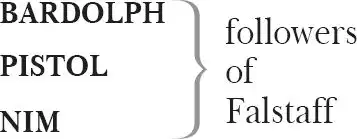
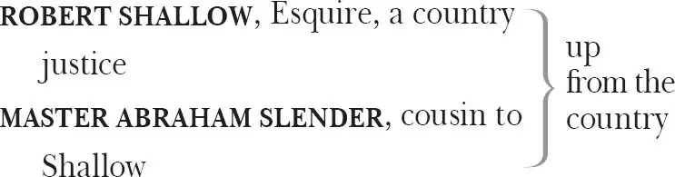
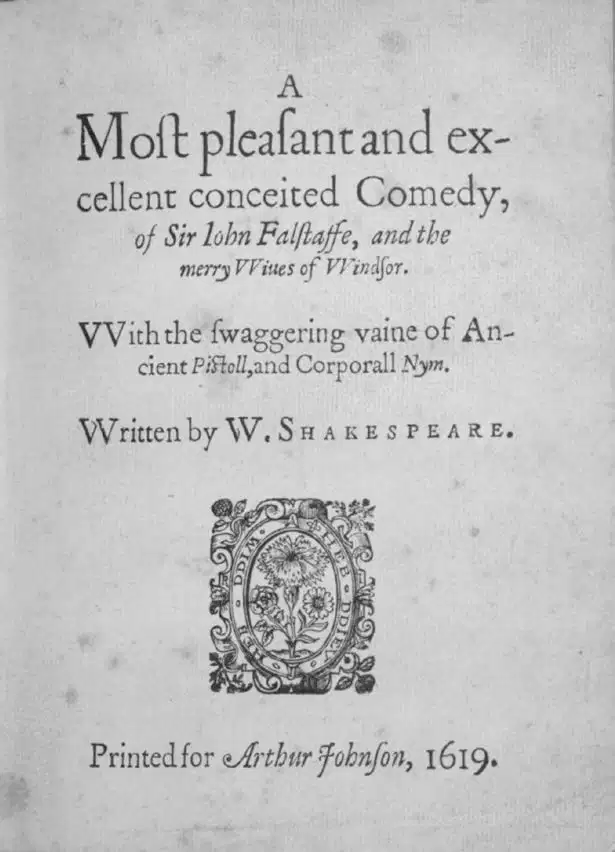

The Merry Wives of Windsor
MISTRESS MARGARET PAGE , of Windsor
MASTER GEORGE PAGE , her husband
ANNE PAGE , their daughter
WILLIAM PAGE , a boy, their son
MISTRESS ALICE FORD , of Windsor
MASTER FRANK FORD , her husband
MASTER FENTON , a young gentleman, in love with Anne Page
SIR JOHN FALSTAFF

ROBIN , Falstaff 's pageboy

PETER SIMPLE , servant to Slender
SIR HUGH EVANS , a Welsh parson
HOST of the Garter Inn
DOCTOR CAIUS , a French physician
JOHN RUGBY , his servant
MISTRESS QUICKLY , his housekeeper
Servants; Children of Windsor playing Fairies
Act 1
Scene 1 1 ／ running scene 1
Enter Justice Shallow, Slender [and ] Sir 2 Hugh Evans
SHALLOW Sir Hugh, persuade 3 me not. I will make a Star Chamber 4 matter of it. If he were twenty Sir John Falstaffs, he shall not abuse Robert Shallow, esquire.
SLENDER In the county of Gloucester, Justice of Peace and Coram 5 .
SHALLOW Ay, cousin 6 Slender, and Custalorum 7 .
SLENDER Ay, and Rato-lorum 8 too; and a gentleman born, master parson, who writes himself Armigero 9 in any bill 10 , warrant 11 , quittance 12 or obligation 13 , Armigero .
SHALLOW Ay, that I do, and have done any time these three hundred years.
SLENDER All his successors — gone before him — hath done't, and all his ancestors — that come after him — may. They may give 14 the dozen white luces 15 in their coat 16 .
SHALLOW It is an old coat.
EVANS The dozen white louses do become 17 an old coat well. It agrees well passant 18 . It is a familiar 19 beast to man, and signifies love.
SHALLOW The luce is the fresh fish. The salt fish is an old coat 20 .
SLENDER I may quarter 21 , coz 22 .
SHALLOW You may, by marrying.
EVANS It is marring indeed, if he quarter it.
SHALLOW Not a whit.
EVANS Yes, py'r lady 23 : if he has a quarter of your coat, there is but three skirts 24 for yourself, in my simple conjectures. But that is all one: if Sir John Falstaff have committed disparagements unto you, I am of the church, and will be glad to do my benevolence 25 , to make atonements 26 and compromises 27 between you.
SHALLOW The Council 28 shall hear it, it is a riot.
EVANS It is not meet 29 the Council hear a riot: there is no fear of Got 30 in a riot. The Council, look you, shall desire to hear the fear of Got, and not to hear a riot. Take your vizaments 31 in that 32 .
SHALLOW Ha, o'my life, if I were young again, the sword 33 should end it.
EVANS It is petter that friends is the sword, and end it. And there is also another device 34 in my prain, which peradventure 35 prings goot discretions 36 with it. There is Anne Page, which is daughter to Master Thomas 37 Page, which is pretty virginity.
SLENDER Mistress Anne Page? She has brown hair, and speaks small 38 like a woman.
EVANS It is that fery 39 person for all the 'orld 40 , as just 41 as you will desire, and seven hundred pounds of moneys, and gold and silver, is 42 her grandsire upon his death's-bed — Got deliver to a joyful resurrections! — give 43 , when she is able to overtake seventeen years old. It were a goot motion 44 , if we leave our pribbles and prabbles 45 , and desire a marriage between Master Abraham and Mistress Anne Page.
SLENDER Did her grandsire leave her seven hundred pound?
EVANS Ay, and her father is make her a petter penny 46 .
SLENDER 47 I know the young gentlewoman: she has good gifts 48 .
EVANS Seven hundred pounds, and possibilities 49 , is goot gifts.
SHALLOW Well, let us see honest 50 Master Page. Is Falstaff there?
EVANS Shall I tell you a lie? I do despise a liar as I do despise one that is false, or as I despise one that is not true. The knight, Sir John, is there, and I beseech you, be ruled by your well-willers 51 . I will peat the door for Master Page.
Knocks
What, ho! Got pless your house here!
PAGE Who's there?
Speaks within and then enters
EVANS Here is Got's plessing, and your friend, and Justice Shallow, and here young Master Slender, that peradventures shall tell you another tale 52 , if matters grow to your likings.
PAGE I am glad to see your worships well. I thank you for my venison, Master Shallow.
SHALLOW Master Page, I am glad to see you: much good do it your good heart. I wished your venison better, it was ill 53 killed. How doth good Mistress Page? And I thank you always with my heart, la 54 — with my heart.
PAGE Sir, I thank you.
SHALLOW Sir, I thank you: by yea and no 55 , I do.
PAGE I am glad to see you, good Master Slender.
SLENDER How does your fallow 56 greyhound, sir? I heard say he was outrun on Cotsall 57 .
PAGE It could not be judged 58 , sir.
SLENDER You'll not confess, you'll not confess.
SHALLOW That he will not. — 'Tis your fault 59 , 'tis your fault. — 'Tis a good dog.
Aside to Slender/To Page
PAGE A cur 60 , sir.
SHALLOW Sir, he's a good dog, and a fair dog, can there be more said? He is good and fair. Is Sir John Falstaff here?
PAGE Sir, he is within: and I would 61 I could do a good office 62 between you.
EVANS It is spoke as a Christians ought to speak.
SHALLOW He hath wronged me, Master Page.
PAGE Sir, he doth in some sort 63 confess it.
SHALLOW If it be confessed, it is not redressed. Is not that so, Master Page? He hath wronged me, indeed he hath, at 64 a word, he hath. Believe me: Robert Shallow esquire saith he is wronged.
PAGE Here comes Sir John.
[Enter Falstaff, Bardolph, Nim and Pistol 65 ]
FALSTAFF Now, Master Shallow, you'll complain of me to the king?
SHALLOW Knight, you have beaten my men, killed my deer, and broke open my lodge 66 .
FALSTAFF But not kissed your keeper's 67 daughter?
SHALLOW Tut, a pin 68 ! This shall be answered 69 .
FALSTAFF I will answer it straight 70 : I have done all this. That is now answered.
SHALLOW The Council shall know this.
FALSTAFF 'Twere better for you if it were known in counsel 71 . You'll be laughed at.
EVANS Pauca verba 72 , Sir John, goot worts 73 .
FALSTAFF Good worts? Good cabbage. Slender, I broke 74 your head. What matter 75 have you against me?
SLENDER Marry, sir, I have matter in my head against you, and against your cony-catching 76 rascals, Bardolph, Nim and Pistol.
BARDOLPH You Banbury cheese 77 !
SLENDER Ay, it is no matter 78 .
PISTOL How now, Mephostophilus 79 ?
SLENDER Ay, it is no matter.
NIM Slice 80 , I say! Pauca 81 , pauca . Slice, that's my humour 82 .
SLENDER Where's Simple, my man? Can you tell, cousin?
EVANS Peace, I pray you. Now let us understand. There is three umpires in this matter, as I understand; that is, Master Page — fidelicet 83 Master Page — and there is myself — fidelicet myself — and the three 84 party is — lastly and finally — mine host 85 of the Garter 86 .
PAGE We three to hear it and end it between them.
EVANS Fery goot, I will make a prief 87 of it in my note-book, and we will afterwards 'ork 88 upon the cause with as great discreetly 89 as we can.
FALSTAFF Pistol!
PISTOL He hears with ears.
EVANS The tevil and his tam 90 ! What phrase is this? He hears with ear? Why, it is affectations.
FALSTAFF Pistol, did you pick Master Slender's purse?
SLENDER Ay, by these gloves, did he, or I would I might never come in mine own great chamber 91 again else, of seven groats 92 in mill-sixpences 93 , and two Edward shovel-boards 94 , that cost me two shilling and two pence apiece of Yead 95 Miller, by these gloves.
FALSTAFF Is this true, Pistol?
EVANS No, it is false 96 , if it is a pick-purse.
PISTOL Ha, thou mountain-foreigner 97 ! Sir John and master mine,
I combat challenge 98 of this latten 99 bilbo 100 .
Word of denial in thy labras 101 here!
Word of denial: froth and scum, thou liest!
SLENDER By these gloves, then, 'twas he.
Points to Nim
NIM Be avised 102 , sir, and pass good humours 103 : I will say 'marry 104 trap' 105 with you, if you run the nuthook 106 's humour on me 107 . That is the very note 108 of it.
SLENDER By this hat, then, he in the red face 109 had it: for though I cannot remember what I did when you made me drunk, yet I am not altogether an ass.
FALSTAFF What say you, Scarlet and John 110 ?
BARDOLPH Why, sir, for my part, I say the gentleman had drunk himself out of his five sentences.
EVANS It is his five senses. Fie, what the ignorance is!
BARDOLPH And being fap 111 , sir, was, as they say, cashiered 112 : and so conclusions passed the careers 113 .
SLENDER Ay, you spake in Latin then too. But 'tis no matter. I'll ne'er be drunk whilst I live again, but in honest, civil, godly company, for this trick. If I be drunk, I'll be drunk with those that have the fear of God, and not with drunken knaves.
EVANS So Got 'udge 114 me, that is a virtuous mind 115 .
FALSTAFF You hear all these matters denied, gentlemen, you hear it.
[Enter Anne, with wine ]
PAGE Nay, daughter, carry the wine in: we'll drink within.
[Exit Anne ]
SLENDER O heaven, this is Mistress Anne Page!
Aside?
[Enter Mistress Ford and Mistress Page ]
PAGE How now, Mistress Ford?
FALSTAFF Mistress Ford, by my troth, you are very well met. By your leave 116 , good mistress.
Kisses her
PAGE Wife, bid these gentlemen welcome. Come, we have a hot venison pasty to 117 dinner. Come, gentlemen, I hope we shall drink down all unkindness.
[Exeunt all except Shallow, Slender and Evans ]
SLENDER I had rather than forty shillings I had my book of Songs and Sonnets 118 here.
[Enter Simple ]
How now, Simple, where have you been? I must wait on myself, must I? You have not the Book of 119 Riddles about you, have you?
SIMPLE Book of Riddles ? Why, did you not lend it to Alice Shortcake upon Allhallowmas 120 last, a fortnight afore Michaelmas 121 ?
SHALLOW Come, coz. Come, coz, we stay 122 for you. A word with you, coz. Marry, this,
coz: there is, as 'twere, a tender 123 , a kind of tender, made afar off 124 by Sir Hugh here.
Do you understand me?
SLENDER Ay, sir, you shall find me reasonable. If it be so, I shall do that that is reason 125 .
SHALLOW Nay, but understand me.
SLENDER So I do, sir.
EVANS Give ear to his motions 126 . Master Slender, I will description the matter to you, if you be capacity of 127 it.
SLENDER Nay, I will do as my cousin Shallow says. I pray you pardon me, he's a Justice of Peace in his country 128 , simple though I stand here 129 .
EVANS But that is not the question. The question is concerning your marriage.
SHALLOW Ay, there's the point, sir.
EVANS Marry, is it: the very point of it, to Mistress Anne Page.
SLENDER Why, if it be so, I will marry her upon any reasonable demands 130 .
EVANS But can you affection the 'oman 131 ? Let us command to know that of your mouth or of your lips, for divers 132 philosophers hold that the lips is parcel 133 of the mouth. Therefore, precisely, can you carry your good will to 134 the maid?
SHALLOW Cousin Abraham Slender, can you love her?
SLENDER I hope, sir, I will do as it shall become one that would do reason.
EVANS Nay, Got's lords and his ladies, you must speak possitable 135 , if you can carry her 136 your desires towards her.
SHALLOW That you must. Will you, upon 137 good dowry, marry her?
SLENDER I will do a greater thing than that upon your request, cousin, in any reason.
SHALLOW Nay, conceive 138 me, conceive me, sweet coz. What I do is to pleasure you, coz. Can you love the maid?
SLENDER I will marry her, sir, at your request. But if there be no great love in the beginning, yet heaven may decrease 139 it upon better acquaintance, when we are married, and have more occasion to know one another. I hope upon familiarity will grow more contempt. But if you say 'Marry her', I will marry her—that I am freely dissolved 140 , and dissolutely 141 .
EVANS It is a fery discretion answer. Save the fall 142 is in the 'ord 143 'dissolutely' — the 'ort is, according to our meaning, 'resolutely' — his meaning is good.
SHALLOW Ay, I think my cousin meant well.
SLENDER Ay, or else I would I might be hanged, la!
SHALLOW Here comes fair Mistress Anne.
[Enter Anne ]
Would I were young for your sake, Mistress Anne.
ANNE The dinner is on the table, my father desires your worships' company.
SHALLOW I will wait on him, fair Mistress Anne.
EVANS 'Od's plessèd will! I will not be absence at the grace.
[Exeunt Shallow and Evans ]
ANNE Will't please your worship to come in, sir?
SLENDER No, I thank you, forsooth 144 , heartily. I am very well.
ANNE The dinner attends 145 you, sir.
SLENDER I am not a-hungry, I thank you, forsooth.— Go, sirrah 146 , for all 147 you are my man, go wait upon my cousin Shallow.
To Simple
[Exit Simple ]
A justice of peace sometime may be beholding 148 to his friend for a man. I keep but three men and a boy yet, till my mother be dead: but what though 149 , yet I live like a poor gentleman born.
ANNE I may not go in without your worship: they will not sit till you come.
SLENDER I'faith, I'll eat nothing. I thank you as much as though I did.
ANNE I pray you, sir, walk in.
SLENDER I had rather walk here, I thank you. I bruised my shin th'other day with playing at sword and dagger with a master of fence 150 — three veneys 151 for a dish of stewed prunes 152 — and, by my troth, I cannot abide the smell of hot meat 153 since. Why do your dogs bark so? Be there bears i'th'town?
ANNE I think there are, sir. I heard them talked of.
SLENDER I love the sport 154 well, but I shall as soon quarrel at it, as any man in England. You are afraid if you see the bear loose, are you not?
ANNE Ay, indeed, sir.
SLENDER That's meat and drink to me, now. I have seen Sackerson 155 loose twenty times, and have taken him by the chain: but, I warrant 156 you, the women have so cried and shrieked at it that it passed 157 . But women, indeed, cannot abide 'em: they are very ill-favoured 158 rough things.
[Enter Page ]
PAGE Come, gentle Master Slender, come: we stay for you.
SLENDER I'll eat nothing, I thank you, sir.
PAGE By cock and pie 159 , you shall not choose 160 , sir. Come, come.
SLENDER Nay, pray you lead the way.
PAGE Come on, sir.
SLENDER Mistress Anne, yourself shall go first.
ANNE Not I, sir, pray you, keep on 161 .
SLENDER Truly, I will not go first. Truly, la! I will not do you that wrong.
ANNE I pray you, sir.
SLENDER I'll rather be unmannerly than troublesome. You do yourself wrong, indeed, la!
Goes first
Exeunt
Scene 2 ／ running scene 2
Enter Evans and Simple
EVANS Go your ways, and ask of 162 Doctor Caius' house, which is the way; and there dwells one Mistress Quickly, which is in the manner of his nurse 163 , or his dry nurse 164 , or his cook, or his laundry 165 , his washer and his wringer 166 .
SIMPLE Well, sir.
EVANS Nay, it is petter yet. Give her this letter. For it is a 'oman that altogether's acquaintance 167 with Mistress Anne Page. And the letter is to desire and require her to solicit 168 your master's desires to Mistress Anne Page. I pray you, be gone: I will make an end of my dinner, there's pippins 169 and cheese to come.
Gives letter
Exeunt
Scene 3 ／ running scene 3
Enter Falstaff, Host, Bardolph, Nim, Pistol [and ] page [Robin ]
FALSTAFF Mine host of the Garter!
HOST What says my bully rook 170 ? Speak scholarly and wisely.
FALSTAFF Truly, mine host, I must turn away some of my followers.
HOST Discard, bully Hercules 171 , cashier 172 . Let them wag 173 . Trot, trot.
FALSTAFF I sit at 174 ten pounds a week.
HOST Thou'rt an emperor: Caesar, Kaiser 175 and Pheazar 176 . I will entertain 177 Bardolph: he shall draw, he shall tap 178 . Said I well, bully Hector 179 ?
FALSTAFF Do so, good mine host.
HOST I have spoke. Let him follow.— Let me see thee froth 180 and lime 181 . I am at a word 182 : follow.
To Bardoph
[Exit ]
FALSTAFF Bardolph, follow him. A tapster 183 is a good trade. An old cloak makes a new jerkin 184 : a withered servingman a fresh tapster. Go, adieu.
BARDOLPH It is a life that I have desired. I will thrive.
[Exit Bardolph ]
PISTOL O base Hungarian wight 185 , wilt thou the spigot 186 wield?
NIM He was gotten in drink 187 . Is not the humour conceited 188 ?
FALSTAFF I am glad I am so acquit 189 of this tinderbox 190 . His thefts were too open 191 : his filching was like an unskilful singer, he kept not time.
NIM The good humour 192 is to steal at a minute's rest 193 .
PISTOL 'Convey', the wise it call. 'Steal?' Foh! A fico 194 for the phrase.
FALSTAFF Well, sirs, I am almost out at heels 195 .
PISTOL Why then, let kibes 196 ensue.
FALSTAFF There is no remedy: I must cony-catch, I must shift 197 .
PISTOL Young ravens must have food.
FALSTAFF Which of you know Ford of this town?
PISTOL I ken the wight 198 : he is of substance good.
FALSTAFF My honest lads, I will tell you what I am about 199 .
PISTOL Two yards, and more.
FALSTAFF No quips now, Pistol! Indeed, I am in the waist two yards about, but I am now about no waste: I am about thrift. Briefly, I do mean to make love to 200 Ford's wife. I spy entertainment 201 in her: she discourses, she carves 202 , she gives the leer 203 of invitation. I can construe 204 the action 205 of her familiar 206 style, and the hardest voice 207 of her behaviour — to be Englished 208 rightly — is, 'I am Sir John Falstaff's.'
PISTOL He hath studied her will 209 , and translated her will, out of honesty 210 , into English.
NIM The anchor is deep 211 . Will that humour pass 212 ?
FALSTAFF Now, the report goes she has all the rule of her husband's purse: he hath a legion of angels 213 .
PISTOL As many devils entertain 214 . And 'To her 215 , boy!' say I.
NIM The humour rises 216 : it is good. Humour me the angels 217 .
FALSTAFF I have writ me 218 here a letter to her. And here another to Page's wife, who even now gave me good eyes too, examined my parts with most judicious oeillades 219 . Sometimes the beam of her view gilded my foot, sometimes my portly belly.
Shows letters
PISTOL Then did the sun on dunghill shine.
NIM I thank thee for that humour 220 .
FALSTAFF O, she did so course 221 o'er my exteriors with such a greedy intention 222 , that the appetite of her eye did seem to scorch me up like a burning-glass 223 . Here's another letter to her. She bears the purse 224 too: she is a region in Guiana 225 , all gold and bounty. I will be cheaters 226 to them both, and they shall be exchequers 227 to me. They shall be my East and West Indies, and I will trade 228 to them both. — Go bear thou this letter to Mistress Page — and thou this to Mistress Ford. We will thrive, lads, we will thrive.
To Nim
To Pistol
PISTOL Shall I Sir Pandarus of Troy 229 become,
And by my side wear steel 230 ? Then Lucifer take all!
Gives back the letter
NIM I will run no base humour 231 . Here, take the humour-letter 232 . I will keep the 'haviour of reputation 233 .
Gives the letter back
FALSTAFF Hold, sirrah, bear you these letters tightly 234 ,
To Robin
Sail like my pinnace 235 to these golden shores.
Rogues, hence, avaunt 236 ! Vanish like hailstones: go,
Trudge, plod away o'th'hoof 237 , seek shelter, pack 238 !
Falstaff will learn the humour 239 of the age,
French thrift 240 , you rogues, myself and skirted 241 page.
[Exeunt Falstaff and Robin ]
PISTOL Let vultures gripe 242 thy guts! For gourd and fullam 243 holds 244 ,
And high and low 245 beguiles 246 the rich and poor:
Tester 247 I'll have in pouch 248 when thou shalt lack,
NIM I have operations 251 which be humours of 252 revenge.
PISTOL Wilt thou revenge?
NIM By welkin 253 and her star!
PISTOL With wit or steel 254 ?
NIM With both the humours 255 , I. I will discuss 256 the humour 257 of this love to Ford.
PISTOL And I to Page shall eke 258 unfold
How Falstaff, varlet vile,
His dove will prove 259 , his gold will hold,
And his soft couch defile.
NIM My humour shall not cool. I will incense Ford to deal with poison. I will possess him with yellowness 260 , for the revolt 261 of mine is dangerous. That is my true humour.
PISTOL Thou art the Mars 262 of malcontents 263 . I second thee, troop on.
Exeunt
Scene 4 ／ running scene 4
Enter Mistress Quickly, Simple and John Rugby
MISTRESS QUICKLY What, John Rugby! I pray thee go to the casement and see if you can see my master, Master Doctor Caius, coming. If he do, i'faith, and find anybody in the house, here will be an old 264 abusing of God's patience and the King's English.
RUGBY I'll go watch.
MISTRESS QUICKLY Go, and we'll have a posset 265 for't soon at night 266 , in faith, at the latter end of a sea-coal 267 fire.— [Exit Rugby ] An honest, willing, kind fellow, as ever servant shall come in house withal 268 , and, I warrant you, no tell-tale nor no breed-bate 269 . His worst fault is that he is given to prayer, he is something peevish 270 that way, but nobody but has his fault 271 . But let that pass. Peter Simple you say your name is?
SIMPLE Ay, for fault of a better.
MISTRESS QUICKLY And Master Slender's your master?
SIMPLE Ay, forsooth.
MISTRESS QUICKLY Does he not wear a great round beard, like a glover 272 's paring-knife 273 ?
SIMPLE No, forsooth, he hath but a little wee face, with a little yellow beard: a Cain 274 -coloured 275 beard.
MISTRESS QUICKLY A softly-sprighted 276 man, is he not?
SIMPLE Ay, forsooth, but he is as tall a man of his hands 277 as any is between this and his head 278 . He hath fought with a warrener 279 .
MISTRESS QUICKLY How say you? O, I should remember him: does he not hold up his head, as it were, and strut in his gait?
SIMPLE Yes, indeed, does he.
MISTRESS QUICKLY Well, heaven send Anne Page no worse fortune. Tell Master Parson Evans I will do what I can for your master. Anne is a good girl, and I wish—
RUGBY Out, alas! 280 Here comes my master.
Within
MISTRESS QUICKLY We shall all be shent 281 . Run in here, good young man, go into this closet 282 . He will not stay long. What, John Rugby? John! What, John, I say?
To Simple
Simple goes into the closet
[Enter Rugby ]
Go, John, go inquire for my master. I doubt 283 he be not well, that he comes not home.
[Exit Rugby ]
And down, down, adown-a 284 , etc.
She sings
[Enter Caius ]
CAIUS Vat is you sing? I do not like des toys 285 . Pray you, go and vetch me in my closet une boîtie en vert 286 : a box, a green-a box. Do intend 287 vat I speak? A green-a box.
MISTRESS QUICKLY Ay, forsooth, I'll fetch it you.— I am glad he went not in himself. If he had found the young man, he would have been horn-mad 288 .
Aside
She goes into the closet
CAIUS Fe, fe, fe, fe, ma foi, il fait fort chaud. Je m'en vais voir à le Court la grande affaire 289 .
[Enter Mistress Quickly with a box ]
MISTRESS QUICKLY Is it this, sir?
CAIUS Oui, mette-le au mon pocket. Dépêche 290 , quickly. Vere is dat knave Rugby?
MISTRESS QUICKLY What, John Rugby? John?
[Enter Rugby ]
RUGBY Here, sir!
CAIUS You are John Rugby, and you are Jack Rugby. Come, take-a your rapier, and come after my heel to the court.
RUGBY 'Tis ready, sir, here in the porch.
CAIUS By my trot 291 , I tarry too long. Od's me 292 , que ai-je oublié 293 . Dere is some simples 294 in my closet dat I vill not for the varld I shall leave behind.
He goes into the closet
MISTRESS QUICKLY Ay me, he'll find the young man there and be mad.
CAIUS O diable 295 , diable ! Vat is in my closet? Villain, larron 296 ! Rugby,
Within
my rapier!
Pulls Simple out
MISTRESS QUICKLY Good master, be content.
CAIUS Wherefore shall I be content-a?
MISTRESS QUICKLY The young man is an honest man.
CAIUS What shall de honest man do in my closet? Dere is no honest man dat shall come in my closet.
MISTRESS QUICKLY I beseech you be not so phlegmatic 297 . Hear the truth of it: he came of 298 an errand to me, from Parson Hugh.
CAIUS Vell.
SIMPLE Ay, forsooth, to desire her to—
MISTRESS QUICKLY Peace, I pray you.
CAIUS Peace-a your tongue. Speak-a your tale.
To Mistress Quickly/To Simple
SIMPLE To desire this honest gentlewoman, your maid, to speak a good word to Mistress Anne Page for my master in the way of marriage.
MISTRESS QUICKLY This is all, indeed, la! But I'll ne'er put my finger in the fire, and need not 299 .
CAIUS Sir Hugh send-a you? Rugby, baillez 300 me some paper. Tarry you a little-a while.
Rugby brings paper. Caius writes
MISTRESS QUICKLY I am glad he is so quiet. If he had been throughly moved, you should have heard him so loud and so melancholy 301 . But notwithstanding, man, I'll do you 302 your master what good I can: and the very yea and the no 303 is, the French doctor, my master — I may call him my master, look you, for I keep his house, and I wash, wring, brew, bake, scour, dress meat 304 and drink, make the beds and do all myself—
Aside to Simple
SIMPLE 'Tis a great charge 305 to come under one body's hand.
Aside to Mistress Quickly
MISTRESS QUICKLY Are you avised 306 o'that? You shall find it 307 a great charge, and to be up early and down late. But notwithstanding — to tell you in your ear, I would have no words of it 308 — my master himself is in love with Mistress Anne Page. But notwithstanding that, I know Anne's mind — that's neither here nor there.
Aside to Simple
CAIUS You jack'nape 309 , give-a this letter to Sir Hugh. By gar 310 , it is a shallenge. I will cut his troat in de park 311 , and I will teach a scurvy jack-a-nape priest to meddle or make 312 .— You may be gone. It is not good you tarry here.— By gar, I will cut all his two stones 313 . By gar, he shall not have a stone to throw at his dog.
Gives a letter to Simple
To Simple
[Exit Simple ]
MISTRESS QUICKLY Alas, he speaks but for his friend.
CAIUS It is no matter-a ver 314 dat: do not you tell-a me dat I shall have Anne Page for myself? By gar, I vill kill de Jack 315 priest: and I have appointed mine host of de Jarteer 316 to measure our weapon 317 . By gar, I will myself have Anne Page.
MISTRESS QUICKLY Sir, the maid loves you, and all shall be well. We must give folks leave to prate 318 . What the good-year 319 !
CAIUS Rugby, come to the court with me.— By gar, if I have not Anne Page, I shall turn your head out of my door. Follow my heels, Rugby.
To Mistress Quickly
MISTRESS QUICKLY You shall have An 320 —
[Exeunt Caius and Rugby ]
fool's-head of your own. No, I know Anne's mind for that: never a woman in Windsor knows more of Anne's mind than I do, nor can do more than I do with her, I thank heaven.
FENTON Who's within there, ho?
Within
MISTRESS QUICKLY Who's there, I trow 321 ? Come near 322 the house, I pray you.
[Enter Fenton ]
FENTON How now, good woman? How dost thou?
MISTRESS QUICKLY The better that it pleases your good worship to ask.
FENTON What news? How does pretty Mistress Anne?
MISTRESS QUICKLY In truth, sir, and she is pretty, and honest 323 , and gentle, and one that is your friend 324 — I can tell you that by the way — I praise heaven for it.
FENTON Shall I do any good, thinkest thou? Shall I not lose my suit?
MISTRESS QUICKLY Troth, sir, all is in his hands above: but notwithstanding, Master Fenton, I'll be sworn on a book 325 she loves you. Have not your worship a wart above your eye?
FENTON Yes, marry, have I. What of that?
MISTRESS QUICKLY Well, thereby hangs a tale: good faith, it is such another Nan 326 327 —but, I detest 328 , an honest maid as ever broke bread. We had an hour's talk of that wart. I shall never laugh but in that maid's company. But, indeed, she is given too much to allicholy 329 and musing. But for you — well, go to 330 —
FENTON Well, I shall see her today. Hold, there's money for thee: let me have thy voice 331 in my behalf. If thou see'st her before me, commend me—
MISTRESS QUICKLY Will I? I'faith, that we will. And I will tell your worship more of the wart the next time we have confidence 332 , and of other wooers.
FENTON Well, farewell, I am in great haste now.
MISTRESS QUICKLY Farewell to your worship.
[Exit Fenton ]
Truly, an honest gentleman. But Anne loves him not. For I know Anne's mind as well as another does. Out upon't 333 , what have I forgot?
Exit
Act 2
Scene 1 ／ running scene 5
Enter Mistress Page
With a letter
MISTRESS PAGE What, have I scaped 334 love-letters in the holiday-time 335 of my beauty, and am I now a subject for them? Let me see: 'Ask me no reason why I love you, for though Love use Reason for his precisian 336 , he admits him not for his counsellor 337 . You are not young, no more am I: go to then, there's sympathy 338 . You are merry, so am I: ha, ha, then there's more sympathy. You love sack 339 , and so do I: would you desire better sympathy? Let it suffice thee, Mistress Page, at the least if the love of soldier can suffice, that I love thee. I will not say, pity me — 'tis not a soldier-like phrase — but I say, love me. By me,
Reads
Thine own true knight,
By day or night,
Or any kind of light,
With all his might
For thee to fight,
John Falstaff.'
What a Herod of Jewry 340 is this? O wicked, wicked world! One that is well-nigh worn to pieces with age, to show himself a young gallant 341 ? What an unweighed 342 behaviour hath this Flemish 343 drunkard picked — with the devil's name — out of my conversation, that he dares in this manner assay me? Why, he hath not been thrice in my company! What should I say 344 to him? I was then frugal of my mirth — heaven forgive me! Why, I'll exhibit a bill in the parliament for the putting down 345 of men. How shall I be revenged on him? For revenged I will be, as sure as his guts are made of puddings 346 .
[Enter Mistress Ford ]
MISTRESS FORD Mistress Page, trust me 347 , I was going to your house.
MISTRESS PAGE And, trust me, I was coming to you. You look very ill 348 .
MISTRESS FORD Nay, I'll ne'er believe that; I have 349 to show to the contrary.
MISTRESS PAGE Faith, but you do, in my mind.
MISTRESS FORD Well, I do then: yet I say I could show you to the contrary. O Mistress Page, give me some counsel!
MISTRESS PAGE What's the matter, woman?
MISTRESS FORD O woman, if it were not for one trifling respect 350 , I could come to such honour!
MISTRESS PAGE Hang the trifle, woman, take the honour. What is it? Dispense with trifles: what is it?
MISTRESS FORD If I would but go to hell 351 for an eternal moment or so, I could be knighted.
MISTRESS PAGE What? Thou liest! Sir Alice Ford? These knights will hack 352 , and so thou shouldst not alter the article of thy gentry 353 .
MISTRESS FORD We burn daylight 354 . Here, read, read. Perceive how I might be knighted. I shall think the worse of fat men, as long as I have an eye to make difference of men's liking 355 . And yet he would not swear, praised women's modesty, and gave such orderly and well-behaved reproof to all uncomeliness 356 , that I would have sworn his disposition would have gone to the truth of 357 his words. But they do no more adhere and keep place together than the hundred Psalms to the tune of 'Greensleeves' 358 . What tempest, I trow, threw this whale — with so many tuns 359 of oil in his belly — ashore at Windsor? How shall I be revenged on him? I think the best way were to entertain 360 him with hope, till the wicked fire of lust have melted him in his own grease. Did you ever hear the like?
Gives letter to Mistress Page
MISTRESS PAGE Letter for letter, but that the name of Page and Ford differs. To thy great comfort in this mystery of ill opinions 361 , here's the twin-brother of thy letter. But let thine inherit 362 first, for I protest mine never shall. I warrant he hath a thousand of these letters, writ with blank space for different names — sure, more — and these are of the second edition. He will print them, out of doubt, for he cares not what he puts into the press 363 , when he would put us two. I had rather be a giantess, and lie under Mount Pelion 364 . Well, I will find you twenty lascivious turtles 365 ere 366 one chaste man.
Shows her own letter
MISTRESS FORD Why, this is the very same: the very hand 367 , the very words. What doth he think of us?
Compares the two letters
MISTRESS PAGE Nay, I know not. It makes me almost ready to wrangle with mine own honesty 368 . I'll entertain 369 myself like one that I am not acquainted withal: for, sure, unless he know some strain 370 in me that I know not myself, he would never have boarded 371 me in this fury 372 .
MISTRESS FORD 'Boarding', call you it? I'll be sure to keep him above deck 373 .
MISTRESS PAGE So will I: if he come 374 under my hatches 375 , I'll never to sea again. Let's be revenged on him. Let's appoint him a meeting, give him a show of comfort in his suit 376 and lead him on with a fine-baited 377 delay, till he hath pawned his horses to mine host of the Garter.
MISTRESS FORD Nay, I will consent to act any villainy against him that may not sully the chariness 378 of our honesty. O, that my husband saw this letter! It would give eternal food to his jealousy.
MISTRESS PAGE Why, look where he comes, and my good man too: he's as far from jealousy as I am from giving him cause, and that—I hope—is an unmeasurable distance.
MISTRESS FORD You are the happier woman.
MISTRESS PAGE Let's consult together against this greasy knight. Come hither.
They withdraw
[Enter Ford with Pistol, and Page with Nim ]
FORD Well, I hope it be not so.
PISTOL Hope is a curtal 379 dog in some affairs.
Sir John affects 380 thy wife.
FORD Why, sir, my wife is not young.
PISTOL He woos both high and low, both rich and poor,
Both young and old, one with another, Ford.
He loves the gallimaufry 381 , Ford, perpend 382 .
FORD Love my wife?
PISTOL With liver 383 burning hot. Prevent 384 ,
Or go thou like Sir Actaeon 385 , he
With Ringwood 386 at thy 387 heels.
O, odious is the name 388 !
FORD What name, sir?
PISTOL The horn, I say. Farewell.
Take heed, have open eye, for thieves do foot 389 by night.
Take heed, ere summer comes, or cuckoo-birds 390 do sing.
Away 391 , Sir Corporal Nim!
Believe it, Page, he speaks sense.
[Exit ]
FORD I will be patient. I will find out this.
Aside
NIM And this is true, I like not the humour of lying. He hath wronged me in some humours: I should have borne 392 the humoured letter to her, but I have a sword, and it shall bite upon my necessity 393 . He loves your wife: there's the short and the long. My name is Corporal Nim. I speak and I avouch 'tis true: my name is Nim, and Falstaff loves your wife. Adieu. I love not the humour of bread and cheese 394 . Adieu.
To Page
[Exit ]
PAGE 'The humour of it', quoth a 395 ! Here's a fellow frights English out of his 396 wits.
FORD I will seek out Falstaff.
PAGE I never heard such a drawling, affecting 397 rogue.
FORD If I do find it 398 — well.
PAGE I will not believe such a Cataian 399 , though 400 the priest o'th'town commended him for a true man.
FORD 'Twas a good sensible fellow — well.
PAGE How now, Meg?
Mistress Page and Mistress Ford come forward
MISTRESS PAGE Whither go you, George? Hark you.
MISTRESS FORD How now, sweet Frank, why art thou melancholy?
FORD I melancholy? I am not melancholy. Get you home, go.
MISTRESS FORD Faith, thou hast some crotchets 401 in thy head now.— Will you go, Mistress Page?
MISTRESS PAGE Have with you 402 .— You'll come to dinner, George?—
Look who comes yonder: she shall be our messenger to this paltry knight.
Aside to Mistress Ford
[Enter Mistress Quickly ]
MISTRESS FORD Trust me, I thought on her: she'll fit it 403 .
Aside to Mistress Page
MISTRESS PAGE You are come to see my daughter Anne?
MISTRESS QUICKLY Ay, forsooth, and I pray how does good Mistress Anne?
MISTRESS PAGE Go in with us and see. We have an hour's talk with you.
[Exeunt Mistress Page, Mistress Ford and Mistress Quickly ]
PAGE How now, Master Ford?
FORD You heard what this knave told me, did you not?
PAGE Yes, and you heard what the other told me?
FORD Do you think there is truth in them?
PAGE Hang 'em, slaves! I do not think the knight would offer 404 it. But these that accuse him in his intent towards our wives are a yoke 405 of his discarded men: very rogues, now they be out of service.
FORD Were they his men?
PAGE Marry, were they.
FORD I like it never the better for that. Does he lie 406 at the Garter?
PAGE Ay, marry, does he. If he should intend this voyage 407 toward my wife, I would turn her loose to him, and what he gets more of her than sharp words, let it lie on my head 408 .
FORD I do not misdoubt 409 my wife, but I would be loath to turn them 410 together. A man may be too confident. I would have nothing lie on my head. I cannot be thus satisfied.
PAGE Look where my ranting 411 host of the Garter comes: there is either liquor in his pate 412 or money in his purse, when he looks so merrily.
[Enter Host ]
How now, mine host?
HOST How now, bully-rook? Thou'rt a gentleman.
[Enter Shallow ]
Cavaliero 413 Justice, I say!
SHALLOW I follow, mine host, I follow. Good even and twenty 414 , good Master Page. Master Page, will you go with us? We have sport in hand.
HOST Tell him, Cavaliero Justice: tell him, bully-rook.
SHALLOW Sir, there is a fray to be fought between Sir Hugh the Welsh priest and Caius the French doctor.
FORD Good mine host o'th'Garter, a word with you.
They speak apart
HOST What sayst thou, my bully-rook?
SHALLOW Will you go with us to behold it? My merry host hath had the measuring of their weapons, and, I think, hath appointed them contrary 415 places, for, believe me, I hear the parson is no jester 416 . Hark, I will tell you what our sport shall be.
To Page
They speak apart
HOST Hast thou no suit against my knight, my guest-cavalier 417 ?
FORD None, I protest 418 . But I'll give you a pottle 419 of burned sack 420 to give me recourse 421 to him, and tell him my name is Broom, only for a jest.
HOST My hand, bully. Thou shalt have egress and regress 422 — said I well? — and thy name shall be Broom. It is a merry knight.— Will you go, An-heires 423 ?
To Shallow and Page
SHALLOW Have with you, mine host.
PAGE I have heard the Frenchman hath good skill in his rapier.
SHALLOW Tut, sir, I could have told you more. In these times you stand on distance 424 : your passes, stoccadoes 425 , and I know not what. 'Tis the heart 426 , Master Page, 'tis here, 'tis here. I have seen the time, with my long sword 427 , I would have made you four tall 428 fellows skip like rats.
HOST Here, boys, here, here! Shall we wag 429 ?
PAGE Have with you. I had rather hear them scold 430 than fight.
[Exeunt Host, Shallow and Page ]
FORD Though Page be a secure 431 fool, and stands so firmly on his wife's frailty 432 , yet I cannot put off my opinion so easily. She was in his 433 company at Page's house, and what they made 434 there I know not. Well, I will look further into't, and I have a disguise to sound 435 Falstaff. If I find her honest, I lose not my labour: if she be otherwise, 'tis labour well bestowed.
Exit
Scene 2 ／ running scene 6
Enter Falstaff [and ] Pistol
FALSTAFF I will not lend thee a penny.
PISTOL Why, then the world's mine oyster, which I with sword will open.
FALSTAFF Not a penny. I have been content, sir, you should lay my countenance 436 to pawn 437 . I have grated upon 438 my good friends for three reprieves for you and your coach-fellow 439 Nim, or else you had looked through the grate 440 , like a gemini 441 of baboons. I am damned in hell for swearing to gentlemen my friends you were good soldiers and tall fellows. And when Mistress Bridget lost the handle of her fan 442 , I took't upon 443 mine honour thou hadst it not.
PISTOL Didst not thou share 444 ? Hadst thou not fifteen pence?
FALSTAFF Reason 445 , you rogue, reason. Think'st thou I'll endanger my soul gratis 446 ? At a word, hang no more about me 447 , I am no gibbet for you. Go—a short knife and a throng 448 — to your manor of Picked-hatch 449 , go! You'll not bear a letter for me, you rogue. You stand upon your honour. Why, thou unconfinable 450 baseness, it is as much as I can do to keep the terms of my honour precise 451 . Ay, ay, I myself sometimes, leaving the fear of heaven on the left hand 452 , and hiding mine honour in my necessity, am fain to shuffle, to hedge and to lurch 453 : and yet, you rogue, will ensconce 454 your rags, your cat-a-mountain 455 looks, your red-lattice 456 phrases, and your bold-beating 457 oaths, under the shelter of your honour? You will not do it?
You?
PISTOL I do relent 458 . What would thou more of man?
[Enter Robin ]
ROBIN Sir, here's a woman would speak with you.
FALSTAFF Let her approach.
[Enter Mistress Quickly ]
MISTRESS QUICKLY Give 459 your worship good morrow.
FALSTAFF Good morrow, good wife.
MISTRESS QUICKLY Not so 460 , an't please your worship.
FALSTAFF Good maid, then.
MISTRESS QUICKLY That I am, I'll be sworn,
As my mother was the first hour I was born 461 .
FALSTAFF I do believe the swearer. What with me?
MISTRESS QUICKLY Shall I vouchsafe 462 your worship a word or two?
FALSTAFF Two thousand, fair woman, and I'll vouchsafe thee the hearing.
MISTRESS QUICKLY There is one Mistress Ford, sir — I pray come a little nearer this ways 463 — I myself dwell with master Doctor Caius—
FALSTAFF Well, on 464 . Mistress Ford, you say—
MISTRESS QUICKLY Your worship says very true. I pray your worship come a little nearer this ways.
FALSTAFF I warrant thee nobody hears. Mine own people, mine own people.
Gestures toward Pistol and Robin
MISTRESS QUICKLY Are they so? Heaven bless them, and make them his servants.
FALSTAFF Well, Mistress Ford: what of her?
MISTRESS QUICKLY Why, sir, she's a good creature. Lord, lord, your worship's a wanton 465 ! Well, heaven forgive you, and all of us, I pray—
FALSTAFF Mistress Ford, come, Mistress Ford.
MISTRESS QUICKLY Marry, this is the short and the long of it: you have brought her into such a canaries 466 as 'tis wonderful 467 . The best courtier of them all — when the court lay at Windsor—could never have brought her to such a canary. Yet there has been knights, and lords, and gentlemen, with their coaches, I warrant you—coach after coach, letter after letter, gift after gift, smelling so sweetly, all musk, and so rushling 468 , I warrant you, in silk and gold, and in such alligant 469 terms, and in such wine and sugar of the best and the fairest that would have won any woman's heart: and, I warrant you, they could never get an eye-wink of 470 her. I had myself twenty angels 471 given me this morning, but I defy all angels — in any such sort 472 , as they say — but in the way of honesty: and, I warrant you, they could never get her so much as sip on a cup with the proudest of them all. And yet there has been earls, nay, which is more, pensioners 473 , but, I warrant you, all is one with her.
FALSTAFF But what says she to me? Be brief, my good she-Mercury 474 .
MISTRESS QUICKLY Marry, she hath received your letter, for the which she thanks you a thousand times; and she gives you to notify 475 that her husband will be absence from his house between ten and eleven.
FALSTAFF Ten and eleven.
MISTRESS QUICKLY Ay, forsooth, and then you may come and see the picture, she says, that you wot 476 of. Master Ford, her husband, will be from home. Alas, the sweet woman leads an ill life with him: he's a very jealousy man. She leads a very frampold 477 life with him, good heart.
FALSTAFF Ten and eleven. Woman, commend me to her. I will not fail her.
MISTRESS QUICKLY Why, you say well. But I have another messenger 478 to your worship. Mistress Page hath her hearty commendations to you too: and let me tell you in your ear, she's as fartuous 479 a civil modest 480 wife, and one, I tell you, that will not miss you 481 morning nor evening prayer, as any is in Windsor, whoe'er be the other: and she bade me tell your worship that her husband is seldom from home, but she hopes there will come a time. I never knew a woman so dote upon a man. Surely I think you have charms 482 , la. Yes, in truth.
FALSTAFF Not I, I assure thee. Setting the attraction of my good parts 483 aside, I have no other charms.
MISTRESS QUICKLY Blessing on your heart for't!
FALSTAFF But I pray thee tell me this: has Ford's wife and Page's wife acquainted each other how they love me?
MISTRESS QUICKLY That were a jest indeed! They have not so little grace 484 , I hope — that were a trick indeed! But Mistress Page would desire you to send her your little page, of all loves 485 . Her husband has a marvellous infection to 486 the little page, and truly Master Page is an honest man. Never a wife in Windsor leads a better life than she does: do what she will, say what she will, take all, pay all, go to bed when she list 487 , rise when she list, all is as she will, and truly she deserves it, for if there be a kind 488 woman in Windsor, she is one. You must send her your page, no remedy.
FALSTAFF Why, I will.
MISTRESS QUICKLY Nay, but do so, then, and, look you, he may come and go between you both: and in any case have a nay-word 489 , that you may know one another's mind, and the boy never need to understand anything, for 'tis not good that children should know any wickedness. Old folks, you know, have discretion, as they say, and know the world.
FALSTAFF Fare thee well, commend me to them both. There's my purse: I am yet thy debtor.— Boy, go along with this woman.
[Exeunt Mistress Quickly and Robin ]
This news distracts 490 me.
PISTOL This punk 491 is one of Cupid's carriers 492 .
Clap 493 on more sails, pursue, up with your fights 494 ,
Give fire. She is my prize 495 , or ocean whelm 496 them all!
[Exit ]
FALSTAFF Say'st thou so, old Jack? 497 Go thy ways: I'll make more of thy old body than I have done. Will they yet look after 498 thee? Wilt thou, after the expense of so much money, be now a gainer? Good body, I thank thee. Let them say 'tis grossly 499 done, so 500 it be fairly 501 done, no matter.
[Enter Bardolph, with a goblet ]
BARDOLPH Sir John, there's one Master Broom below would fain 502 speak with you and be acquainted with you, and hath sent your worship a morning's draught of sack.
FALSTAFF Broom is his name?
BARDOLPH Ay, sir.
FALSTAFF Call him in.
[Exit Bardolph ]
Such Brooms are welcome to me, that o'erflows such liquor. Aha, Mistress Ford and Mistress Page, have I encompassed 503 you? Go to, via 504 !
[Enter Bardolph, with Ford disguised, carrying a bag of money ]
FORD Bless you, sir.
FALSTAFF And you, sir. Would you speak with me?
FORD I make bold 505 to press with so little preparation 506 upon you.
FALSTAFF You're welcome. What's your will? Give us leave 507 , drawer 508 .
[Exit Bardolph ]
FORD Sir, I am a gentleman that have spent much: my name is Broom.
FALSTAFF Good Master Broom, I desire more acquaintance of you.
FORD Good Sir John, I sue 509 for yours: not to charge 510 you, for I must let you understand I think myself in better plight 511 for a lender than you are, the which hath something emboldened me to this unseasoned 512 intrusion. For they say, if money go before, all ways do lie open.
FALSTAFF Money is a good soldier, sir, and will on 513 .
FORD Troth, and I have a bag of money here troubles me. If you will help to bear it, Sir John, take all, or half, for easing me of the carriage 514 .
Sets it down
FALSTAFF Sir, I know not how I may deserve to be your porter.
FORD I will tell you, sir, if you will give me the hearing.
FALSTAFF Speak, good Master Broom: I shall be glad to be your servant.
FORD Sir, I hear you are a scholar — I will be brief with you — and you have been a man long known to me, though I had never so good means as desire to make myself acquainted with you. I shall discover 515 a thing to you, wherein I must very much lay open mine own imperfection. But, good Sir John, as you have one eye upon my follies, as you hear them unfolded, turn another into the register 516 of your own, that I may pass with a reproof the easier, sith 517 you yourself know how easy it is to be such an offender.
FALSTAFF Very well, sir, proceed.
FORD There is a gentlewoman in this town, her husband's name is Ford.
FALSTAFF Well, sir.
FORD I have long loved her, and, I protest to you, bestowed much on her: followed her with a doting observance 518 , engrossed 519 opportunities to meet her, fee'd 520 every slight occasion that could but niggardly give me sight of her: not only bought many presents to give her, but have given largely 521 to many to know what she would have given 522 . Briefly, I have pursued her as love hath pursued me, which hath been on the wing of all occasions. But whatsoever I have merited, either in my mind or in my means 523 , meed 524 I am sure I have received none, unless experience be a jewel that I have purchased at an infinite rate, and that hath taught me to say this:
'Love like a shadow flies 525 when substance 526 love pursues,
Pursuing that that flies 527 , and flying what pursues.'
FALSTAFF Have you received no promise of satisfaction 528 at her hands?
FORD Never.
FALSTAFF Have you importuned 529 her to such a purpose?
FORD Never.
FALSTAFF Of what quality was your love, then?
FORD Like a fair house built on another man's ground, so that I have lost my edifice by mistaking the place where I erected 530 it.
FALSTAFF To what purpose have you unfolded this to me?
FORD When I have told you that, I have told you all. Some say that though she appear honest 531 to me, yet in other places she enlargeth her mirth 532 so far that there is shrewd construction 533 made of her. Now, Sir John, here is the heart of my purpose: you are a gentleman of excellent breeding, admirable discourse, of great admittance 534 , authentic 535 in your place and person, generally allowed 536 for your many war-like, court-like and learned preparations 537 .
FALSTAFF O, sir!
FORD Believe it, for you know it. There is money: spend it, spend it, spend more, spend all I have, only give me so much of your time in exchange of it, as to lay an amiable 538 siege to the honesty of this Ford's wife. Use your art of wooing, win her to consent to you. If any man may, you may as soon as any.
Points to the bag
FALSTAFF Would it apply well to 539 the vehemency of your affection that I should win what you would enjoy? Methinks you prescribe to yourself very preposterously 540 .
FORD O, understand my drift 541 : she dwells so securely on the excellency of her honour that the folly 542 of my soul dares not present itself. She is too bright to be looked against 543 . Now, could I come to her with any detection 544 in my hand, my desires had instance 545 and argument to commend themselves: I could drive her then from the ward 546 of her purity, her reputation, her marriage-vow, and a thousand other her 547 defences, which now are too too strongly embattled against me. What say you to't, Sir John?
FALSTAFF Master Broom, I will first make bold with your money. Next, give me your hand. And last, as I am a gentleman, you shall, if you will, enjoy Ford's wife.
Takes the bag
FORD O, good sir!
FALSTAFF I say you shall.
FORD Want 548 no money, Sir John: you shall want none.
FALSTAFF Want no Mistress Ford, Master Broom, you shall want none. I shall be with her, I may tell you, by her own appointment. Even as you came in to me, her assistant or go-between parted from me. I say I shall be with her between ten and eleven, for at that time the jealous rascally knave her husband will be forth 549 . Come you to me at night: you shall know how I speed 550 .
FORD I am blest in your acquaintance. Do you know Ford, sir?
FALSTAFF Hang him, poor cuckoldly knave, I know him not. Yet I wrong him to call him poor: they say the jealous wittolly 551 knave hath masses of money, for the which 552 his wife seems to me well-favoured 553 . I will use her as the key of the cuckoldly rogue's coffer, and there's my harvest-home 554 .
FORD I would you knew Ford, sir, that you might avoid him if you saw him.
FALSTAFF Hang him, mechanical 555 salt-butter 556 rogue! I will stare him out of his wits, I will awe him with my cudgel. It shall hang like a meteor 557 o'er the cuckold's horns. Master Broom, thou shalt know I will predominate 558 over the peasant, and thou shalt lie with his wife. Come to me soon at night. Ford's a knave, and I will aggravate his style 559 . Thou, Master Broom, shalt know him for knave and cuckold. Come to me soon at night.
[Exit ]
FORD What a damned Epicurean 560 rascal is this? My heart is ready to crack with impatience. Who says this is improvident 561 jealousy? My wife hath sent to him, the hour is fixed, the match is made. Would any man have thought this? See the hell of having a false 562 woman: my bed shall be abused, my coffers ransacked, my reputation gnawn at, and I shall not only receive this villainous wrong, but stand under the adoption of abominable terms 563 , and by him that does me this wrong. Terms, names! Amaimon sounds well: Lucifer, well: Barbason 564 , well: yet they are devils' additions 565 , the names of fiends. But Cuckold? Wittol? Cuckold? The devil himself hath not such a name. Page is an ass, a secure 566 ass. He will trust his wife, he will not be jealous. I will rather trust a Fleming 567 with my butter, Parson Hugh the Welshman with my cheese, an Irishman with my aqua-vitae 568 bottle, or a thief to walk 569 my ambling gelding 570 , than my wife with herself. Then she plots, then she ruminates, then she devises: and what they think in their hearts they may effect — they will break their hearts but they will effect. Heaven be praised for my jealousy! Eleven o'clock the hour. I will prevent this, detect my wife, be revenged on Falstaff, and laugh at Page. I will about it. Better three hours too soon than a minute too late. Fie, fie, fie! Cuckold, cuckold, cuckold!
Exit
Scene 3 ／ running scene 7
Enter Caius and Rugby
CAIUS Jack Rugby!
RUGBY Sir?
CAIUS Vat is the clock, Jack?
RUGBY 'Tis past the hour, sir, that Sir Hugh promised to meet.
CAIUS By gar, he has save his soul, dat he is no come. He has pray his Pible well, dat he is no come. By gar, Jack Rugby, he is dead already, if he be come.
RUGBY He is wise, sir. He knew your worship would kill him, if he came.
CAIUS By gar, de herring is no dead, so as 571 I vill kill him. Take your rapier, Jack. I vill tell you how I vill kill him.
Draws
RUGBY Alas, sir, I cannot fence.
CAIUS Villainy 572 , take your rapier.
RUGBY Forbear. Here's company.
Caius sheathes his sword
[Enter Host, Shallow, Slender and Page ]
HOST Bless thee, bully doctor.
SHALLOW 'Save 573 you, Master Doctor Caius.
PAGE Now, good master doctor.
SLENDER Give you good morrow, sir.
CAIUS Vat be all you, one, two, tree, four, come for?
HOST To see thee fight, to see thee foin 574 , to see thee traverse 575 , to see thee here, to see thee there, to see thee pass thy punto, thy stock 576 , thy reverse 577 , thy distance 578 , thy montant 579 . Is he dead, my Ethiopian 580 ? Is he dead, my Francisco 581 ? Ha, bully! What says my Aesculapius 582 , my Galen 583 , my heart of elder 584 ? Ha? Is he dead, bully stale 585 ? Is he dead?
CAIUS By gar, he is de coward Jack-priest of de vorld. He is not show his face.
HOST Thou art a Castalion 586 king-urinal 587 . Hector of Greece 588 , my boy!
CAIUS I pray you bear witness that me have stay, six or seven, two, tree hours for him, and he is no come.
SHALLOW He is the wiser man, Master Doctor: he is a curer of souls, and you a curer of bodies. If you should fight, you go against the hair 589 of your professions. Is it not true, Master Page?
PAGE Master Shallow, you have yourself been a great fighter, though now a man of peace.
SHALLOW Bodykins 590 , Master Page, though I now be old and of the peace, if I see a sword out, my finger itches to make one 591 . Though we are justices and doctors and churchmen, Master Page, we have some salt 592 of our youth in us. We are the sons of women, Master Page.
PAGE 'Tis true, Master Shallow.
SHALLOW It will be found so, Master Page.— Master Doctor Caius, I am come to fetch you home. I am sworn of the peace. You have showed yourself a wise physician, and Sir Hugh hath shown himself a wise and patient churchman. You must go with me, Master Doctor.
HOST Pardon, guest-justice 593 . A word, Monsieur Mockwater 594 .
CAIUS Mock-vater? Vat is dat?
HOST Mockwater, in our English tongue, is valour, bully.
CAIUS By gar, then I have as much mock-vater as de Englishman. Scurvy Jack-dog 595 priest! By gar, me vill cut his ears.
HOST He will clapper-claw 596 thee tightly, bully.
CAIUS Clapper-de-claw? Vat is dat?
HOST That is, he will make thee amends.
CAIUS By gar, me do look he shall clapper-de-claw me, for, by gar, me vill have it.
HOST And I will provoke him to't, or let him wag.
CAIUS Me tank you for dat.
HOST And, moreover, bully— but first, Master guest, and Master Page, and eke Cavaliero Slender, go you through the town to Frogmore 597 .
Speaks aside with Shallow, Page and Slender
PAGE Sir Hugh is there, is he?
HOST He is there. See what humour he is in. And I will bring the doctor about by the fields. Will it do well?
SHALLOW We will do it.
PAGE, SHALLOW and SLENDER Adieu, good Master Doctor.
[Exeunt Page, Shallow and Slender ]
CAIUS By gar, me vill kill de priest, for he speak for a jack-an-ape 598 to Anne Page.
HOST Let him die. Sheathe thy impatience, throw cold water on thy choler. Go about the fields with me through Frogmore. I will bring thee where Mistress Anne Page is, at a farmhouse a-feasting, and thou shalt woo her. Cried game 599 , said I well?
CAIUS By gar, me dank you vor dat. By gar, I love you, and I shall procure-a you de good guest: de earl, de knight, de lords, de gentlemen, my patients.
HOST For the which I will be thy adversary 600 toward Anne Page. Said I well?
CAIUS By gar, 'tis good, vell said.
HOST Let us wag, then.
CAIUS Come at my heels, Jack Rugby.
Exeunt
Act 3
Scene 1 ／ running scene 8
Enter Evans and Simple.
Evans with a sword in one hand and a book in the other,
Simple carrying Evans' gown
EVANS I pray you now, good master Slender's serving-man, and friend Simple by your name, which way have you looked for Master Caius, that calls himself doctor of physic 601 ?
SIMPLE Marry, sir, the Petty-ward 602 , the Park-ward 603 , every way: Old Windsor 604 way, and every way but the town way.
EVANS I most fehemently desire you, you will also look that way.
SIMPLE I will, sir.
Steps aside and keeps watch
EVANS Pless my soul, how full of chollors 605 I am, and trempling of mind! I shall be glad if he have deceived me. How melancholies I am! I will knog 606 his urinals 607 about his knave's costard 608 when I have good opportunities for the 'ork. Pless my soul!
To shallow rivers 609 , to whose falls 610
Sings
Melodious birds sings madrigals 611 .
There will we make our peds of roses,
And a thousand fragrant posies.
To shallow—
Mercy on me! I have a great dispositions to cry.
Melodious birds sing madrigals.
Sings
When as I sat in Pabylon 612 613
— And a thousand vagram 614 posies.
To shallow, etc.
SIMPLE Yonder he 615 is coming, this way, Sir Hugh.
EVANS He's welcome.
To shallow rivers, to whose falls—
Sings
Heaven prosper the right! What weapons is he?
SIMPLE No weapons 616 , sir. There comes my master, Master Shallow, and another gentleman, from Frogmore, over the stile, this way.
Enter Page, Shallow and Slender
EVANS Pray you give me my gown, or else keep it in your arms.
Reads his Bible
SHALLOW How now, Master Parson? Good morrow, good Sir Hugh. Keep a gamester from the dice, and a good student from his book, and it is wonderful.
SLENDER Ah, sweet Anne Page!
Aside?
PAGE 'Save you, good Sir Hugh!
EVANS 'Pless you from 617 his mercy sake, all of you!
SHALLOW What, the sword and the word 618 ? Do you study them both, Master Parson?
PAGE And youthful still: in your doublet and hose 619 , this raw rheumatic day?
EVANS There is reasons and causes for it.
PAGE We are come to you to do a good office, Master Parson.
EVANS Fery well: what is it?
PAGE Yonder is a most reverend gentleman, who, belike 620 , having received wrong by some person, is at most odds 621 with his own gravity and patience that ever you saw.
SHALLOW I have lived fourscore 622 years and upward: I never heard a man of his place, gravity and learning so wide of his own respect 623 .
EVANS What is he?
PAGE I think you know him: Master Doctor Caius, the renowned French physician.
EVANS Got's will, and his passion of my heart, I had as lief 624 you would tell me of a mess of porridge 625 .
PAGE Why?
EVANS He has no more knowledge in Hibocrates 626 and Galen, and he is a knave besides — a cowardly 627 knave as you would desires to be acquainted withal.
PAGE I warrant you, he's 628 the man should fight with him.
To Shallow
SLENDER O sweet Anne Page!
Aside?
SHALLOW It appears so by his weapons. Keep them asunder: here comes Doctor Caius.
[Enter Host, Caius and Rugby ]
Evans and Caius prepare to fight
PAGE Nay, good Master Parson, keep in your weapon.
SHALLOW So do you, good Master Doctor.
HOST Disarm them, and let them question 629 . Let them keep their limbs whole and hack our English 630 .
Shallow and Page take their swords
CAIUS I pray you, let-a me speak a word with your ear. Vherefore vill you not meet-a me?
EVANS Pray you, use your patience.— In good time.
Aside to Caius/Aloud
CAIUS By gar, you are de coward, de Jack dog, John ape.
EVANS Pray you, let us not be laughing-stocks to other men's humours. I desire you in friendship, and I will one way or other make you amends.— I will knog your urinal about your knave's coxcomb 631 .
Aside to Caius
Aloud
CAIUS Diable ! Jack Rugby, mine host de Jarteer, have I not stay 632 for him to kill him? Have I not, at de place I did appoint?
EVANS As I am a Christians soul, now look you, this is the place appointed, I'll be judgement by 633 mine host of the Garter.
HOST Peace, I say, Gallia and Gaul 634 , French and Welsh, soul-curer and body-curer!
CAIUS Ay, dat is very good, excellent.
HOST Peace, I say. Hear mine host of the Garter. Am I politic 635 ? Am I subtle 636 ? Am I a Machiavel 637 ? Shall I lose my doctor? No, he gives me the potions and the motions 638 . Shall I lose my parson? My priest? My Sir Hugh? No, he gives me the proverbs and the no-verbs 639 . Give me thy hand, terrestrial 640 , so. Give me thy hand, celestial 641 , so. Boys of art 642 , I have deceived you both: I have directed you to wrong places. Your hearts are mighty, your skins are whole, and let burned sack be the issue 643 .— Come, lay their swords to pawn 644 .—
To Caius/To Evans
To Page and Shallow
Follow me, lads of peace, follow, follow, follow.
[Exit ]
To Caius and Evans
SHALLOW Trust me, a mad host. Follow, gentlemen, follow.
SLENDER O sweet Anne Page!
Aside?
[Exeunt Shallow, Slender and Page ]
CAIUS Ha, do I perceive dat? Have you make-a de sot 645 of us, ha, ha?
EVANS This is well, he has made us his vlouting-stog 646 . I desire you that we may be friends, and let us knog our prains together to be revenge on this same scall 647 , scurvy cogging companion 648 , the host of the Garter.
CAIUS By gar, with all my heart. He promise to bring me where is Anne Page: by gar, he deceive me too.
EVANS Well, I will smite his noddles 649 . Pray you, follow.
[Exeunt ]
Scene 2 ／ running scene 9
Enter Robin [followed by ] Mistress Page
MISTRESS PAGE Nay, keep your way 650 , little gallant. You were wont 651 to be a follower, but now you are a leader. Whether 652 had you rather lead mine eyes, or eye your master's heels?
ROBIN I had rather, forsooth, go before you like a man than follow him like a dwarf.
MISTRESS PAGE O, you are a flattering boy. Now I see you'll be a courtier.
[Enter Ford ]
FORD Well met, Mistress Page. Whither go you?
MISTRESS PAGE Truly, sir, to see your wife. Is she at home?
FORD Ay, and as idle as she may hang together 653 , for want of company. I think, if your husbands were dead, you two would marry.
MISTRESS PAGE Be sure of that — two other husbands.
FORD Where had you this pretty weather-cock?
MISTRESS PAGE I cannot tell what the dickens his name is my husband had him of 654 . What do you call your knight's name, sirrah?
ROBIN Sir John Falstaff.
FORD Sir John Falstaff?
MISTRESS PAGE He, he. I can never hit on's name. There is such a league 655 between my good man and he. Is your wife at home indeed?
FORD Indeed she is.
MISTRESS PAGE By your leave, sir, I am sick till I see her.
[Exeunt Mistress Page and Robin ]
FORD Has Page any brains? Hath he any eyes? Hath he any thinking? Sure they sleep, he hath no use of them. Why, this boy will carry a letter twenty mile as easy as a cannon will shoot point-blank twelvescore 656 . He pieces out 657 his wife's inclination, he gives her folly 658 motion and advantage 659 . And now she's going to my wife, and Falstaff's boy with her. A man may hear this shower sing in the wind 660 . And Falstaff's boy with her. Good plots, they are laid, and our revolted 661 wives share damnation together. Well, I will take him 662 , then torture my wife, pluck the borrowed veil of modesty from the so-seeming Mistress Page, divulge 663 Page himself for a secure and wilful 664 Actaeon 665 , and to these violent proceedings all my neighbours shall cry aim 666 . The clock gives me my cue, and my assurance bids me search: there I shall find Falstaff. I shall be rather praised for this than mocked, for it is as positive as the earth is firm that Falstaff is there. I will go.
A clock strikes
[Enter Page, Shallow, Slender, Host, Evans, Caius and Rugby ]
SHALLOW, PAGE and OTHERS Well met, Master Ford.
FORD Trust me, a good knot 667 . I have good cheer 668 at home, and I pray you all go with me.
SHALLOW I must excuse myself, Master Ford.
SLENDER And so must I, sir. We have appointed to dine with Mistress Anne, and I would not break with 669 her for more money than I'll speak of.
SHALLOW We have lingered about a match between Anne Page and my cousin Slender, and this day we shall have our answer.
SLENDER I hope I have your good will, father Page.
PAGE You have, Master Slender, I stand wholly for you. But my wife, Master Doctor, is for you altogether.
CAIUS Ay, be-gar, and de maid is love-a me. My nursh-a Quickly tell me so mush.
HOST What say you to young Master Fenton? He capers 670 , he dances, he has eyes of youth, he writes verses, he speaks holiday 671 , he smells April and May. He will carry't 672 , he will carry't, 'tis in his buttons 673 , he will carry't.
To Page
PAGE Not by my consent, I promise you. The gentleman is of no having 674 : he kept company with the wild prince and Poins 675 . He is of too high a region 676 , he knows too much. No, he shall not knit a knot 677 in his fortunes with the finger of my substance 678 . If he take her, let him take her simply 679 : the wealth I have waits on my consent, and my consent goes not that way.
FORD I beseech you heartily, some of you go home with me to dinner. Besides your cheer, you shall have sport: I will show you a monster 680 . Master Doctor, you shall go, so shall you, Master Page, and you, Sir Hugh.
SHALLOW Well, fare you well.— We shall have the freer wooing at Master Page's.
Aside to Slender
[Exeunt Shallow and Slender ]
CAIUS Go home, John Rugby, I come anon 681 .
[Exit Rugby ]
HOST Farewell, my hearts 682 . I will to my honest knight Falstaff, and drink canary 683 with him.
[Exit ]
FORD I think I shall drink in pipe wine 684 first with him. I'll make him dance 685 .—Will you go, gentles 686 ?
Aside
Aloud
ALL Have with 687 you to see this monster.
Exeunt
Scene 3 ／ running scene 10
Enter Mistress Ford and Mistress Page
MISTRESS FORD What, John? What, Robert?
MISTRESS PAGE Quickly, quickly! Is the buck-basket 688 —
MISTRESS FORD I warrant. What, Robin, I say!
[Enter John and Robert with a laundry basket ]
MISTRESS PAGE Come, come, come.
MISTRESS FORD Here, set it down.
MISTRESS PAGE Give your men the charge 689 , we must be brief.
MISTRESS FORD Marry, as I told you before, John and Robert, be ready here hard 690 by in the brew-house 691 , and when I suddenly call you, come forth, and without any pause or staggering take this basket on your shoulders: that done, trudge with it in all haste, and carry it among the whitsters 692 in Datchet Mead 693 , and there empty it in the muddy ditch close by the Thames side.
MISTRESS PAGE You will do it?
To John and Robert
MISTRESS FORD I ha' told them over and over, they lack no direction. Be gone, and come when you are called.
[Exeunt John and Robert ]
MISTRESS PAGE Here comes little Robin.
[Enter Robin ]
MISTRESS FORD How now, my eyas-musket 694 ? What news with you?
ROBIN My master, Sir John, is come in at your back-door, Mistress Ford, and requests your company.
MISTRESS PAGE You little Jack-a-Lent 695 , have you been true to us?
ROBIN Ay, I'll be sworn. My master knows not of your being here and hath threatened to put me into everlasting liberty 696 if I tell you of it: for he swears he'll turn me away 697 .
MISTRESS PAGE Thou'rt a good boy. This secrecy of thine shall be a tailor to thee, and shall make thee a new doublet and hose. I'll go hide me.
MISTRESS FORD Do so.— Go tell thy master I am alone.
[Exit Robin ]
To Robin
Mistress Page, remember you your cue.
MISTRESS PAGE I warrant thee: if I do not act it, hiss me.
[Exit ]
MISTRESS FORD Go to, then. We'll use this unwholesome humidity 698 , this gross watery pumpion 699 . We'll teach him to know turtles from jays 700 .
[Enter Falstaff ]
FALSTAFF Have I caught thee, my heavenly jewel? 701 Why, now let me die, for I have lived long enough: this is the period 702 of my ambition. O this blessèd hour!
MISTRESS FORD O sweet Sir John!
FALSTAFF Mistress Ford, I cannot cog 703 , I cannot prate 704 , Mistress Ford. Now shall I sin in my wish: I would thy husband were dead. I'll speak it before the best lord. I would make thee my lady.
MISTRESS FORD I your lady, Sir John? Alas, I should be a pitiful lady!
FALSTAFF Let the court of France show me such another. I see how thine eye would emulate the diamond: thou hast the right arched beauty of the brow that becomes the ship-tire 705 , the tire-valiant 706 , or any tire of Venetian admittance 707 .
MISTRESS FORD A plain kerchief 708 , Sir John: my brows become 709 nothing else, nor that well neither.
FALSTAFF Thou art a tyrant to say so: thou wouldst make an absolute 710 courtier, and the firm fixture of thy foot 711 would give an excellent motion to thy gait in a semi-circled farthingale 712 . I see what thou wert if Fortune thy foe were not, Nature thy friend 713 . Come, thou canst not hide it.
MISTRESS FORD Believe me, there's no such thing in me.
FALSTAFF What made me love thee? Let that persuade thee there's something extraordinary in thee. Come, I cannot cog and say thou art this and that, like a many of these lisping hawthorn-buds 714 that come like women in men's apparel and smell like Bucklersbury 715 in simple time 716 . I cannot. But I love thee, none but thee — and thou deservest it.
MISTRESS FORD Do not betray me, sir. I fear you love Mistress Page.
FALSTAFF Thou mightst as well say I love to walk by the Counter-gate 717 , which is as hateful to me as the reek 718 of a lime-kiln 719 .
MISTRESS FORD Well, heaven knows how I love you, and you shall one day find it.
FALSTAFF Keep in that mind, I'll deserve it.
MISTRESS FORD Nay, I must tell you, so you do, or else I could not be in that mind.
ROBIN Mistress Ford, Mistress Ford, here's Mistress Page at the door, sweating and blowing 720 and looking wildly, and would needs speak with you presently 721 .
Speaks within or enters
FALSTAFF She shall not see me: I will ensconce me 722 behind the arras 723 .
Falstaff hides himself
MISTRESS FORD Pray you, do so: she's a very tattling woman.
[Enter Mistress Page ]
Robin may enter here
What's the matter? How now?
MISTRESS PAGE O Mistress Ford, what have you done? You're shamed, you're overthrown, you're undone 724 forever!
MISTRESS FORD What's the matter, good Mistress Page?
MISTRESS PAGE O, well-a-day 725 , Mistress Ford, having an honest man to 726 your husband, to give him such cause of suspicion!
MISTRESS FORD What cause of suspicion?
MISTRESS PAGE What cause of suspicion? Out upon you! 727 How am I mistook in you?
MISTRESS FORD Why, alas, what's the matter?
MISTRESS PAGE Your husband's coming hither, woman, with all the officers in Windsor, to search for a gentleman that he says is here now in the house by your consent, to take an ill advantage of his absence. You are undone.
MISTRESS FORD 'Tis not so, I hope.
MISTRESS PAGE Pray heaven it be not so, that you have such a man here! But 'tis most certain your husband's coming, with half Windsor at his heels, to search for such a one. I come before to tell you. If you know yourself clear 728 , why, I am glad of it: but if you have a friend 729 here, convey, convey him out. Be not amazed 730 , call all your senses to you, defend your reputation, or bid farewell to your good life 731
forever.
MISTRESS FORD What shall I do? There is a gentleman my dear friend — and I fear not mine own shame so much as his peril. I had rather than a thousand pound he were out of the house.
MISTRESS PAGE For shame, never stand 732 'you had rather' and 'you had rather'. Your husband's here at hand! Bethink you of some conveyance 733 — in the house you cannot hide him. O, how have you deceived me? Look, here is a basket. If he be of any reasonable stature, he may creep in here, and throw foul linen upon him, as if it were going to bucking. Or — it is whiting-time 734 — send him by your two men to Datchet Mead.
MISTRESS FORD He's too big to go in there. What shall I do?
FALSTAFF Let me see't, let me see't, O, let me see't! I'll in, I'll in. Follow your friend's counsel. I'll in.
Comes out of hiding
MISTRESS PAGE What, Sir John Falstaff? Are these your letters, knight?
Aside to Falstaff
FALSTAFF I love thee. Help me away. Let me creep in here. I'll never—
Gets into the basket. They cover him with foul linen/To Robin
MISTRESS PAGE Help to cover your master, boy.—
Call your men, Mistress Ford.— You dissembling 735 knight!
To Falstaff 736
MISTRESS FORD What, John! Robert! John!
[Exit Robin ]
[Enter John and Robert ]
Go take up these clothes here quickly. Where's the cowl-staff? Look, how you drumble 737 ! Carry them to the laundress in Datchet Mead. Quickly, come.
They attempt to fit the cowl-staff
[Enter Ford, Page, Caius and Evans ]
FORD Pray you, come near. If I suspect without cause, why then make sport at me, then let me be your jest, I deserve it. How now? Whither bear you this?
To Page, Caius and Evans
JOHN To the laundress, forsooth.
MISTRESS FORD Why, what have you to do 738 whither they bear it? You were best meddle with buck-washing 739 .
FORD Buck 740 ? I would I could wash myself of the buck! Buck, buck, buck! Ay, buck! I warrant you, buck — and of the season 741 too, it shall appear.
[Exeunt John and Robert with the basket ]
Gentlemen, I have dreamed tonight 742 . I'll tell you my dream. Here, here, here be my keys: ascend my chambers 743 , search, seek, find out. I'll warrant we'll unkennel 744 the fox. Let me stop this way first. So, now uncape 745 .
Locks the door
PAGE Good Master Ford, be contented 746 . You wrong yourself too much.
FORD True, Master Page. Up, gentlemen. You shall see sport anon. Follow me, gentlemen.
[Exit ]
EVANS This is fery fantastical humours and jealousies.
CAIUS By gar, 'tis no the fashion of France: it is not jealous in France.
PAGE Nay, follow him, gentlemen. See the issue of his search.
[Exeunt Page, Caius and Evans ]
MISTRESS PAGE Is there not a double excellency in this?
MISTRESS FORD I know not which pleases me better, that my husband is deceived, or Sir John.
MISTRESS PAGE What a taking 747 was he in, when your husband asked who was in the basket!
MISTRESS FORD I am half afraid he will have need of washing 748 , so throwing him into the water will do him a benefit.
MISTRESS PAGE Hang him, dishonest rascal! I would all of the same strain 749 were in the same distress.
MISTRESS FORD I think my husband hath some special suspicion of Falstaff's being here, for I never saw him so gross in his jealousy till now.
MISTRESS PAGE I will lay a plot to try 750 that, and we will yet have more tricks with Falstaff: his dissolute disease will scarce obey this medicine.
MISTRESS FORD Shall we send that foolish carrion 751 , Mistress Quickly, to him, and excuse his throwing into the water, and give him another hope, to betray him to another punishment?
MISTRESS PAGE We will do it: let him be sent for tomorrow eight o'clock to have amends.
[Enter Ford, Page, Caius and Evans ]
FORD I cannot find him. Maybe the knave bragged of that he could not compass 752 .
MISTRESS PAGE Heard you that?
Aside to Mistress Ford
MISTRESS FORD You use 753 me well, Master Ford, do you?
FORD Ay, I do so.
MISTRESS FORD Heaven make you better than your thoughts!
FORD Amen!
MISTRESS PAGE You do yourself mighty wrong, Master Ford.
FORD Ay, ay, I must bear it.
EVANS If there be any pody in the house, and in the chambers, and in the coffers, and in the presses 754 , heaven forgive my sins at the day of judgement.
CAIUS By gar, nor I too. There is no bodies.
PAGE Fie, fie, Master Ford, are you not ashamed? What spirit, what devil suggests this imagination? I would not ha' your distemper in this kind 755 for the wealth of Windsor Castle.
FORD 'Tis my fault, Master Page. I suffer for it.
EVANS You suffer for a pad conscience: your wife is as honest a 'omans as I will desires 756 among five thousand, and five hundred too.
CAIUS By gar, I see 'tis an honest woman.
FORD Well, I promised you a dinner. Come, come, walk in the park, I pray you pardon me. I will hereafter make known to you why I have done this. Come, wife, come, Mistress Page. I pray you pardon me. Pray heartily pardon me.
PAGE Let's go in, gentlemen, but trust me, we'll mock him.—
To Caius and Evans
I do invite you tomorrow morning to my house to breakfast. After, we'll
To Ford, Caius and Evans
a-birding 757 together, I have a fine hawk for the bush. Shall it be so?
FORD Anything.
EVANS If there is one, I shall make two in the company.
CAIUS If there be one or two, I shall make-a the turd.
FORD Pray you, go, Master Page.
[Exeunt all but Evans and Caius? ]
EVANS I pray you now remembrance tomorrow on the lousy knave, mine host 758 .
CAIUS Dat is good, by gar, with all my heart.
EVANS A lousy knave, to have his gibes and his mockeries.
Exeunt
Scene 4 ／ running scene 11
Enter Fenton [and ] Anne
FENTON I see I cannot get thy father's love,
Therefore no more turn 759 me to him, sweet Nan.
ANNE Alas, how then?
FENTON Why, thou must be thyself 760 .
He doth object I am too great of birth,
And that, my state being galled 761 with my expense 762 ,
I seek to heal it only by his wealth.
Besides these, other bars 763 he lays before me:
My riots 764 past, my wild societies 765 ,
And tells me 'tis a thing impossible
I should love thee but as a property.
ANNE Maybe he tells you true.
FENTON No, heaven so speed 766 me in my time to come!
Albeit I will confess thy father's wealth
Was the first motive that I wooed thee, Anne,
Yet, wooing thee, I found thee of more value
Than stamps 767 in gold or sums in sealèd bags.
And 'tis the very riches of thyself
That now I aim at.
ANNE Gentle Master Fenton,
Yet seek my father's love, still seek it, sir.
If opportunity and humblest suit
Cannot attain it, why, then — hark you hither!
They speak apart
[Enter Shallow, Slender and Mistress Quickly ]
SHALLOW Break 768 their talk, Mistress Quickly. My kinsman shall speak for himself.
SLENDER I'll make a shaft or a bolt on't 769 . 'Slid 770 , 'tis but venturing 771 .
SHALLOW Be not dismayed 772 .
SLENDER No, she shall not dismay me: I care not for that, but that I am afeard.
MISTRESS QUICKLY Hark ye, Master Slender would speak a word with you.
ANNE I come to him.— This is my father's choice.
Aside to Fenton
O, what a world of vile ill-favoured 773 faults
Looks handsome in three hundred pounds a year!
MISTRESS QUICKLY And how does good Master Fenton? Pray you, a word with you.
They speak apart
SHALLOW She's coming. To her, coz. O boy, thou hadst a father 774 !
SLENDER I had a father, Mistress Anne: my uncle can tell you good jests of him. Pray you, uncle, tell Mistress Anne the jest how my father stole two geese out of a pen, good uncle.
SHALLOW Mistress Anne, my cousin loves you.
SLENDER Ay, that I do, as well as I love any woman in Gloucestershire.
SHALLOW He will maintain you like a gentlewoman.
SLENDER Ay, that I will, come cut and long-tail 775 , under the degree of a squire.
SHALLOW He will make you a hundred and fifty pounds jointure 776 .
ANNE Good Master Shallow, let him woo for himself.
SHALLOW Marry, I thank you for it: I thank you for that good comfort. She calls you, coz. I'll leave you.
Stands aside
ANNE Now, Master Slender.
SLENDER Now, good Mistress Anne.
ANNE What is your will 777 ?
SLENDER My will? 'Od's heartlings 778 , that's a pretty jest indeed! I ne'er made my will yet, I thank heaven. I am not such a sickly creature, I give heaven praise.
ANNE I mean, Master Slender, what would you with me?
SLENDER Truly, for mine own part, I would little or nothing with you. Your father and my uncle hath made motions 779 . If it be my luck, so; if not, happy man be his dole 780 . They can tell you how things go better than I can. You may ask your father, here he comes.
[Enter Page and Mistress Page ]
PAGE Now, Master Slender — love him, daughter Anne.—
Why, how now? What does Master Fenton here?
You wrong me, sir, thus still to haunt 781 my house:
I told you, sir, my daughter is disposed of.
FENTON Nay, Master Page, be not impatient.
MISTRESS PAGE Good Master Fenton, come not to my child.
PAGE She is no match for you.
FENTON Sir, will you hear me?
PAGE No, good Master Fenton.—
Come, Master Shallow. Come, son Slender, in.—
Knowing my mind, you wrong me, Master Fenton.
[Exeunt Page, Shallow and Slender ]
MISTRESS QUICKLY Speak to Mistress Page.
FENTON Good Mistress Page, for that 782 I love your daughter
In such a righteous fashion as I do,
Perforce 783 , against all checks 784 , rebukes and manners 785 ,
I must advance the colours 786 of my love
And not retire. Let me have your good will.
ANNE Good mother, do not marry me to yond 787 fool.
MISTRESS PAGE I mean it not, I seek you a better husband.
MISTRESS QUICKLY That's my master, Master Doctor.
ANNE Alas, I had rather be set quick 788 i'th'earth,
And bowled to death with turnips!
MISTRESS PAGE Come, trouble not yourself. Good Master Fenton,
I will not be your friend nor enemy:
My daughter will I question how she loves you,
And as I find her, so am I affected 789 .
Till then, farewell, sir. She must needs go in,
Her father will be angry.
FENTON Farewell, gentle mistress.— Farewell, Nan.
[Exeunt Mistress Page and Anne ]
MISTRESS QUICKLY This is my doing, now. 'Nay,' said I, 'will you cast away your child on a fool, and a physician? Look on Master Fenton.' This is my doing.
FENTON I thank thee, and I pray thee once 790 tonight, Give my sweet Nan this ring. There's 791 for thy pains.
Gives her a ring and money
MISTRESS QUICKLY Now heaven send thee good fortune.
[Exit Fenton ]
A kind heart he hath. A woman would run through fire and water for such a kind heart. But yet I would my master had Mistress Anne, or I would Master Slender had her: or, in sooth 792 , I would Master Fenton had her. I will do what I can for them all three, for so I have promised, and I'll be as good as my word — but speciously 793 for Master Fenton. Well, I must of 794 another errand to Sir John Falstaff from my two mistresses. What a beast am I to slack it!
Exit
Scene 5 ／ running scene 12
Enter Falstaff
FALSTAFF Bardolph, I say!
[Enter Bardolph ]
BARDOLPH Here, sir.
FALSTAFF Go fetch me a quart 795 of sack: put a toast 796 in't.
[Exit Bardolph ]
Have I lived to be carried in a basket like a barrow 797 of butcher's offal, and to be thrown in the Thames? Well, if I be served such another trick, I'll have my brains ta'en out and buttered, and give them to a dog for a new-year's gift. The rogues slighted me 798 into the river with as little remorse as they would have drowned a blind bitch's puppies 799 , fifteen i'th'litter. And you may know by my size that I have a kind of alacrity in sinking: if the bottom were as deep as hell, I should down 800 . I had been drowned, but that the shore was shelvy 801 and shallow — a death that I abhor, for the water swells a man — and what a thing should I have been when I had been swelled? I should have been a mountain of mummy 802 .
[Enter Bardolph with sack ]
BARDOLPH Here's Mistress Quickly, sir, to speak with you.
FALSTAFF Come. let me pour in some sack to the Thames water, for my belly's as cold as if I had swallowed snowballs for pills to cool the reins 803 . Call her in.
BARDOLPH Come in, woman.
[Enter Mistress Quickly ]
MISTRESS QUICKLY By your leave, I cry you mercy 804 ! Give your worship good morrow.
FALSTAFF Take away these chalices. Go, brew me a pottle 805 of sack finely.
To Bardolph
BARDOLPH With eggs, sir?
FALSTAFF Simple 806 of itself. I'll 807 no pullet-sperm 808 in my brewage.—
How now?
[Exit Bardolph ]
MISTRESS QUICKLY Marry, sir, I come to your worship from Mistress Ford.
FALSTAFF Mistress Ford? I have had ford 809 enough. I was thrown into the ford, I have my belly full of ford.
MISTRESS QUICKLY Alas the day, good heart, that was not her fault. She does so take on with 810 her men: they mistook their erection 811 .
FALSTAFF So did I mine, to build upon a foolish woman's promise.
MISTRESS QUICKLY Well, she laments, sir, for it, that it would yearn 812 your heart to see it. Her husband goes this morning a-birding. She desires you once more to come to her between eight and nine. I must carry her word quickly. She'll make you amends, I warrant you.
FALSTAFF Well, I will visit her. Tell her so, and bid her think what a man is. Let her consider his frailty 813 , and then judge of my merit.
MISTRESS QUICKLY I will tell her.
FALSTAFF Do so. Between nine and ten, say'st thou?
MISTRESS QUICKLY Eight and nine, sir.
FALSTAFF Well, be gone. I will not miss 814 her.
MISTRESS QUICKLY Peace be with you, sir.
[Exit ]
FALSTAFF I marvel I hear not of Master Broom. He sent me word to stay within. I well. O, here he comes.
[Enter Ford, disguised as Broom ]
FORD Bless you, sir!
FALSTAFF Now, Master Broom, you come to know what hath passed between me and Ford's wife.
FORD That indeed, Sir John, is my business.
FALSTAFF Master Broom, I will not lie to you: I was at her house the hour she appointed me.
FORD And sped you 815 , sir?
FALSTAFF Very ill-favouredly 816 , Master Broom.
FORD How so, sir? Did she change her determination 817 ?
FALSTAFF No, Master Broom, but the peaking cornuto 818 her husband, Master Broom, dwelling in a continual 'larum 819 of jealousy, comes me 820 in the instant of our encounter, after we had embraced, kissed, protested 821 , and, as it were, spoke the prologue of our comedy: and at his heels a rabble of his companions, thither provoked and instigated by his distemper, and, forsooth, to search his house for his wife's love.
FORD What, while you were there?
FALSTAFF While I was there.
FORD And did he search for you, and could not find you?
FALSTAFF You shall hear. As good luck would have it, comes in one Mistress Page, gives intelligence of Ford's approach: and, in her invention and Ford's wife's distraction, they conveyed me into a buck-basket.
FORD A buck-basket?
FALSTAFF Yes, a buck-basket! Rammed 822 me in with foul shirts and smocks, socks, foul stockings, greasy napkins, that 823 , Master Broom, there was the rankest compound of villainous smell that ever offended nostril.
FORD And how long lay you there?
FALSTAFF Nay, you shall hear, Master Broom, what I have suffered to bring this woman to evil for your good. Being thus crammed in the basket, a couple of Ford's knaves, his hinds 824 , were called forth by their mistress to carry me in the name of foul clothes to Datchet Lane: they took me on their shoulders, met the jealous knave their master in the door, who asked them once or twice what they had in their basket. I quaked for fear, lest the lunatic knave would have searched it, but fate, ordaining he should be a cuckold, held 825 his hand. Well, on went he for a search, and away went I for foul clothes. But mark 826 the sequel, Master Broom. I suffered the pangs of three several 827 deaths: first, an intolerable fright, to be detected with 828 a jealous rotten 829 bell-wether 830 : next, to be compassed 831 , like a good bilbo 832 in the circumference of a peck 833 , hilt to point, heel to head, and then, to be stopped 834 in like a strong distillation 835 with stinking clothes that fretted 836 in their own grease. Think of that, a man of my kidney 837 , think of that — that am as subject to heat as butter — a man of continual dissolution 838 and thaw: it was a miracle to scape suffocation. And in the height of this bath, when I was more than half stewed in grease like a Dutch dish 839 , to be thrown into the Thames, and cooled, glowing hot, in that surge, like a horse-shoe. Think of that — hissing hot — think of that, Master Broom.
FORD In good sadness 840 , sir, I am sorry that for my sake you have suffered all this. My suit then is desperate. You'll undertake her no more?
FALSTAFF Master Broom, I will be thrown into Etna 841 , as I have been into Thames, ere I will leave her thus. Her husband is this morning gone a-birding. I have received from her another embassy 842 of meeting: 'twixt eight and nine is the hour, Master Broom.
FORD 'Tis past eight already, sir.
FALSTAFF Is it? I will then address me to my appointment. Come to me at your convenient leisure, and you shall know how I speed. And the conclusion shall be crowned with your enjoying her. Adieu. You shall have her, Master Broom. Master Broom, you shall cuckold Ford.
[Exit ]
FORD Hum! Ha! Is this a vision? Is this a dream? Do I sleep? Master Ford awake, awake, Master Ford! There's a hole made in your best coat 843 , Master Ford. This 'tis to be married, this 'tis to have linen and buck-baskets. Well, I will proclaim myself what I am. I will now take the lecher.He is atmy house.He cannot scape me, 'tis impossible he should. He cannot creep into a halfpenny purse 844 , nor into a pepper-box. But, lest the devil that guides him should aid him, I will search impossible places. Though what I am 845 I cannot avoid, yet to be what I would not shall not make me tame. If I have horns to make one mad 846 , let the proverb go with me: I'll be horn-mad.
Exit
Act 4
Scene 1 ／ running scene 13
Enter Mistress Page, Mistress Quickly [and ] William
MISTRESS PAGE Is he at Master Ford's already, think'st thou?
MISTRESS QUICKLY Sure he is by this 847 , or will be presently. But truly he is very courageous 848 mad about his throwing into the water. Mistress Ford desires you to come suddenly 849 .
MISTRESS PAGE I'll be with her by and by. I'll but bring my young man here to school. Look where his master comes. 'Tis a playing-day 850 , I see.
[Enter Evans ]
How now, Sir Hugh, no school today?
EVANS No, Master Slender is let the boys leave to play 851 .
MISTRESS QUICKLY Blessing of his heart!
MISTRESS PAGE Sir Hugh, my husband says my son profits nothing in the world at his book. I pray you, ask him some questions in his accidence 852 .
EVANS Come hither, William. Hold up your head. Come.
MISTRESS PAGE Come on, sirrah, hold up your head. Answer your master, be not afraid.
EVANS William, how many numbers is in nouns?
WILLIAM PAGE Two 853 .
MISTRESS QUICKLY Truly, I thought there had been one number more, because they say, 'Od's nouns' 854 .
EVANS Peace your tattlings! 855 What is 'fair', William?
WILLIAM PAGE Pulcher.
MISTRESS QUICKLY Polecats 856 ? There are fairer things than polecats, sure.
EVANS You are a very simplicity 'oman. I pray you peace. What is lapis , William?
WILLIAM PAGE A stone.
EVANS And what is 'a stone', William?
WILLIAM PAGE A pebble.
EVANS No, it is lapis . I pray you, remember in your prain.
WILLIAM PAGE Lapis .
EVANS That is a good William. What is he, William, that does lend articles 857 ?
WILLIAM PAGE Articles are borrowed of the pronoun 858 , and be thus declined:
Singulariter 859 , nominativo 860 , hic, haec, hoc 861 862 .
EVANS Nominativo, hig, hag, hog, pray you mark: genitivo 863 , huius. Well, what is your accusative case?
WILLIAM PAGE Accusativo, hinc 864 —
Faltering
EVANS I pray you, have your remembrance, child, accusativo, hing, hang, hog 865 .
MISTRESS QUICKLY 'Hang-hog' 866 is Latin for bacon, I warrant you.
EVANS Leave your prabbles 867 , 'oman. What is the focative 868 case 869 , William?
WILLIAM PAGE O 870 , — vocativo , O.
EVANS Remember, William, focative is caret 871 .
MISTRESS QUICKLY And that's a good root.
EVANS 'Oman, forbear.
MISTRESS PAGE Peace!
EVANS What is your genitive case plural, William?
WILLIAM PAGE Genitive case?
EVANS Ay.
WILLIAM PAGE Genitive: horum 872 , harum 873 , horum.
MISTRESS QUICKLY Vengeance of 874 Ginny's case 875 , fie on her! Never name her, child, if she be a whore.
EVANS For shame, 'oman.
MISTRESS QUICKLY You do ill to teach the child such words: he teaches him to hick and to hack 876 , which they'll do fast enough of themselves, and to call 'horum' — fie upon you!
EVANS 'Oman, art thou lunatics? Hast thou no understandings for thy cases and the numbers of the genders? Thou art as foolish Christian creatures as I would desires.
MISTRESS PAGE Prithee, hold thy peace.
To Mistress Quickly
EVANS Show me now, William, some declension 877 s of your pronouns.
WILLIAM PAGE Forsooth, I have forgot.
EVANS It is qui, quae, quod . If you forget your quies , your quaes , and your quods , you must be preeches 878 . Go your ways, and play, go.
MISTRESS PAGE He is a better scholar than I thought he was.
EVANS He is a good sprag 879 memory. Farewell, Mistress Page.
MISTRESS PAGE Adieu, good Sir Hugh.
[Exit Evans ]
Get you home, boy. Come, we stay too long.
Exeunt
Scene 2 ／ running scene 14
Enter Falstaff [and ] Mistress Ford
The basket is brought out
FALSTAFF Mistress Ford, your sorrow hath eaten up my sufferance 880 . I see you are obsequious 881 in your love, and I profess requital to a hair's breadth, not only, Mistress Ford, in the simple office 882 of love, but in all the accoutrement 883 , complement 884 and ceremony of it. But are you sure of 885 your husband now?
MISTRESS FORD He's a-birding, sweet Sir John.
MISTRESS PAGE What, ho, gossip 886 Ford! What, ho!
Within
MISTRESS FORD Step into th'chamber, Sir John.
[Exit Falstaff ]
[Enter Mistress Page ]
MISTRESS PAGE How now, sweetheart, who's at home besides yourself?
MISTRESS FORD Why, none but mine own people 887 .
MISTRESS PAGE Indeed?
MISTRESS FORD No, certainly.— Speak louder.
Whispers to her
MISTRESS PAGE Truly, I am so glad you have nobody here.
MISTRESS FORD Why?
MISTRESS PAGE Why, woman, your husband is in his old lines 888 again: he so takes on 889 yonder with my husband, so rails against all married mankind, so curses all Eve's daughters of what complexion 890 soever, and so buffets himself on the forehead, crying, 'Peer out 891 , peer out!', that any madness I ever yet beheld seemed but tameness, civility and patience to 892 this his distemper he is in now. I am glad the fat knight is not here.
MISTRESS FORD Why, does he talk of him?
MISTRESS PAGE Of none but him, and swears he was carried out, the last time he searched for him, in a basket: protests to my husband he is now here, and hath drawn him and the rest of their company from their sport to make another experiment 893 of his suspicion. But I am glad the knight is not here: now he shall see his own foolery.
MISTRESS FORD How near is he, Mistress Page?
MISTRESS PAGE Hard by, at street end. He will be here anon.
MISTRESS FORD I am undone. The knight is here.
MISTRESS PAGE Why then you are utterly shamed, and he's but a dead man. What a woman are you? Away with him, away with him! Better shame than murder.
MISTRESS FORD Which way should he go? How should I bestow 894 him? Shall I put him into the basket again?
[Enter Falstaff ]
FALSTAFF No, I'll come no more i'th'basket. May I not go out ere he come?
MISTRESS PAGE Alas, three of Master Ford's brothers watch the door with pistols, that none shall issue out: otherwise you might slip away ere he came. But what make you 895 here?
FALSTAFF What shall I do? I'll creep up into the chimney.
MISTRESS FORD There they always use to discharge their birding-pieces 896 . Creep into the kiln-hole 897 .
FALSTAFF Where is it?
MISTRESS FORD He will seek there, on my word. Neither press, coffer, chest, trunk, well, vault, but he hath an abstract 898 for the remembrance of such places, and goes to them by his note: there is no hiding you in the house.
FALSTAFF I'll go out then.
MISTRESS PAGE If you go out in your own semblance 899 , you die, Sir John — unless you go out disguised.
MISTRESS FORD How might we disguise him?
MISTRESS PAGE Alas the day, I know not. There is no woman's gown big enough for him: otherwise he might put on a hat, a muffler 900 and a kerchief, and so escape.
FALSTAFF Good hearts, devise something: any extremity rather than a mischief 901 .
MISTRESS FORD My maid's aunt, the fat woman of Brentford 902 , has a gown above 903 .
MISTRESS PAGE On my word, it will serve him: she's as big as he is — and there's her thrummed 904 hat and her muffler too. Run up, Sir John.
MISTRESS FORD Go, go, sweet Sir John. Mistress Page and I will look 905 some linen for your head.
MISTRESS PAGE Quick, quick! We'll come dress you straight 906 : put on the gown the while 907 .
[Exit Falstaff ]
MISTRESS FORD I would my husband would meet him in this shape 908 . He cannot abide the old woman of Brentford; he swears she's a witch, forbade her my house and hath threatened to beat her.
MISTRESS PAGE Heaven guide him to thy husband's cudgel, and the devil guide his cudgel afterwards!
MISTRESS FORD But is my husband coming?
MISTRESS PAGE Ay, in good sadness 909 is he, and talks of the basket too, howsoever he hath had intelligence 910 .
MISTRESS FORD We'll try 911 that, for I'll appoint my men to carry the basket again, to meet him at the door with it, as they did last time.
MISTRESS PAGE Nay, but he'll be here presently. Let's go dress him like the witch of Brentford.
MISTRESS FORD I'll first direct my men what they shall do with the basket. Go up, I'll bring linen for him straight.
[Exit ]
MISTRESS PAGE Hang him, dishonest 912 varlet! We cannot misuse him enough.
We'll leave a proof, by that which we will do,
Wives may be merry, and yet honest 913 too.
We do not act 914 that often jest and laugh,
'Tis old but true: still 915 swine eat all the draff 916 .
[Exit ]
[Enter Mistress Ford with John and Robert ]
MISTRESS FORD Go, sirs, take the basket again on your shoulders. Your master is hard at 917 door. If he bid you set it down, obey him. Quickly, dispatch 918 .
[Exit ]
JOHN Come, come, take it up.
ROBERT Pray heaven it be not full of knight again.
JOHN I hope not, I had as lief 919 bear so much lead.
John and Robert lift the basket
[Enter Ford, Page, Shallow, Caius and Evans ]
FORD Ay, but if it prove true, Master Page, have you any way then to unfool me again? 920 — Set down the basket, villain.
John and Robert set down the basket
Somebody call my wife. Youth in a basket! O, you panderly 921 rascals, there's a knot, a gin 922 , a pack, a conspiracy against me. Now shall the devil be shamed 923 . What, wife, I say! Come, come forth. Behold what honest clothes you send forth to bleaching.
PAGE Why, this passes 924 , Master Ford. You are not to go loose any longer, you must be pinioned 925 .
EVANS Why, this is lunatics, this is mad as a mad dog!
SHALLOW Indeed, Master Ford, this is not well indeed.
FORD So say I too, sir.
[Enter Mistress Ford ]
Come hither, Mistress Ford — Mistress Ford the honest woman, the modest wife, the virtuous creature, that hath the jealous fool to her husband. I suspect without cause, mistress, do I?
MISTRESS FORD Heaven be my witness you do, if you suspect me in any dishonesty.
FORD Well said, brazen-face, hold it out 926 ! Come forth, sirrah!
Pulls clothes out of the basket
PAGE This passes.
MISTRESS FORD Are you not ashamed? Let the clothes alone.
FORD I shall find you anon.
EVANS 'Tis unreasonable. Will you take up your wife's clothes? Come away.
FORD Empty the basket, I say!
To John and Robert
PAGE Why, man, why?
FORD Master Page, as I am a man, there was one conveyed out of my house yesterday in this basket. Why may not he be there again? In my house I am sure he is. My intelligence is true, my jealousy is reasonable. Pluck me out all the linen.
To John and Robert
MISTRESS FORD If you find a man there, he shall die a flea's death 927 .
John and Robert empty the basket
PAGE Here's no man.
SHALLOW By my fidelity 928 , this is not well, Master Ford. This wrongs you.
EVANS Master Ford, you must pray, and not follow the imaginations of your own heart. This is jealousies.
FORD Well, he's not here I seek for.
PAGE No, nor nowhere else but in your brain.
FORD Help to search my house this one time. If I find not what I seek, show no colour for my extremity 929 , let me forever be your table-sport 930 . Let them say of me, 'As jealous as Ford, that searched a hollow walnut for his wife's leman 931 .' Satisfy me once more, once more search with me.
John and Robert refill the basket and exeunt with it
MISTRESS FORD What, ho, Mistress Page, come you and the old woman down. My husband will come into the chamber.
FORD Old woman? What old woman's that?
MISTRESS FORD Why, it is my maid's aunt of Brentford.
FORD A witch, a quean 932 , an old cozening 933 quean! Have I not forbid her my house? She comes of 934 errands, does she? We are simple men, we do not know what's brought to pass under the profession 935 of fortune-telling. She works by charms, by spells, by th'figure 936 , and such daubery 937 as this is, beyond our element 938 . We know nothing. Come down, you witch, you hag, you! Come down, I say!
Takes a cudgel
MISTRESS FORD Nay, good sweet husband.— Good gentlemen, let him not strike the old woman.
[Enter Mistress Page leading Falstaff in woman's clothes ]
MISTRESS PAGE Come, Mother Prat 939 , come, give me your hand.
FORD I'll prat 940 her. Out of my door, you witch, you rag 941 , you baggage, you polecat, you runnion 942 ! Out, out! I'll conjure you, I'll fortune-tell you.
Beats Falstaff
[Exit Falstaff ]
MISTRESS PAGE Are you not ashamed? I think you have killed the poor woman.
MISTRESS FORD Nay, he will do it. 'Tis a goodly credit for you 943 .
FORD Hang her, witch!
EVANS By yea and no 944 , I think the 'oman is a witch indeed. I like not when a 'oman has a great peard. I spy a great peard under his muffler.
FORD Will you follow, gentlemen? I beseech you, follow. See but the issue of my jealousy. If I cry out thus upon no trail 945 , never trust me when I open 946 again.
PAGE Let's obey his humour 947 a little further. Come, gentlemen.
[Exeunt Ford, Page, Shallow, Caius and Evans ]
MISTRESS PAGE Trust me, he beat him most pitifully.
MISTRESS FORD Nay, by th'mass, that he did not: he beat him most unpitifully, methought.
MISTRESS PAGE I'll have the cudgel hallowed 948 and hung o'er the altar. It hath done meritorious 949 service.
MISTRESS FORD What think you? May we, with the warrant 950 of womanhood and the witness of a good conscience, pursue him with any further revenge?
MISTRESS PAGE The spirit of wantonness 951 is, sure, scared out of him. If the devil have him not in fee-simple 952 , with fine and recovery 953 , he will never, I think, in the way of waste 954 , attempt us again.
MISTRESS FORD Shall we tell our husbands how we have served 955 him?
MISTRESS PAGE Yes, by all means, if it be but to scrape the figures 956 out of your husband's brains. If they can find in their hearts the poor unvirtuous fat knight shall be any further afflicted, we two will still be the ministers 957 .
MISTRESS FORD I'll warrant they'll have him publicly shamed, and methinks there would be no period 958 to the jest, should he not be publicly shamed.
MISTRESS PAGE Come, to the forge with it, then shape it 959 . I would not have things cool.
Exeunt
Scene 3 ／ running scene 15
Enter Host and Bardolph
BARDOLPH Sir, the German desires to have three of your horses. The duke himself will be tomorrow at court, and they are going to meet him.
HOST What duke should that be comes so secretly? I hear not of him in the court. Let me speak with the gentlemen. They speak English?
BARDOLPH Ay, sir. I'll call them to you.
HOST They shall have my horses, but I'll make them pay, I'll sauce them 960 . They have had my house a week at command 961 . I have turned away my other guests. They must come off 962 , I'll sauce them. Come.
Exeunt
Scene 4 ／ running scene 16
Enter Page, Ford, Mistress Page, Mistress Ford and Evans
EVANS 'Tis one of the best discretions of a 'oman 963 as ever I did look upon.
PAGE And did he send you both these letters at an instant 964 ?
MISTRESS PAGE Within a quarter of an hour.
FORD Pardon me, wife. Henceforth do what thou wilt.
I rather will suspect the sun with cold
Than thee with wantonness. Now doth thy honour stand,
In him that was of late an heretic 965 ,
As firm as faith.
PAGE 'Tis well, 'tis well, no more.
Be not as extreme in submission as in offence.
But let our plot go forward. Let our wives
Yet once again, to make us public sport,
Appoint a meeting with this old fat fellow,
Where we may take him and disgrace him for it.
FORD There is no better way than that they spoke of.
PAGE How? To send him word they'll meet him in the park at midnight? Fie, fie,
he'll never come.
EVANS You say he has been thrown in the rivers and has been grievously peaten as an old 'oman. Methinks there should be terrors in him, that he should not come. Methinks his flesh is punished, he shall have no desires.
PAGE So think I too.
MISTRESS FORD Devise but how you'll use 966 him when he comes,
And let us two devise to bring him thither.
MISTRESS PAGE There is an old tale goes that Herne the hunter 967 ,
Sometime 968 a keeper here in Windsor Forest,
Doth all the winter-time, at still midnight,
Walk round about an oak, with great ragged 969 horns,
And there he blasts 970 the tree, and takes 971 the cattle,
And makes milch-kine 972 yield blood, and shakes a chain
In a most hideous and dreadful manner.
You have heard of such a spirit, and well you know
The superstitious idle-headed eld 973
Received and did deliver to our age
This tale of Herne the hunter for a truth.
PAGE Why, yet there want 974 not many that do fear
In deep of night to walk by this Herne's Oak.
But what of this?
MISTRESS FORD Marry, this is our device:
That Falstaff at that oak shall meet with us.
PAGE Well, let it not be doubted but he'll come,
And in this shape 975 . When you have brought him thither,
What shall be done with him? What is your plot?
MISTRESS PAGE That likewise have we thought upon, and thus:
Nan Page my daughter, and my little son,
And three or four more of their growth 976 , we'll dress
Like urchins 977 , oafs 978 and fairies, green and white,
With rounds of waxen tapers 979 on their heads,
And rattles in their hands. Upon a sudden,
As Falstaff, she and I are newly met,
Let them from forth a sawpit 980 rush at once
With some diffusèd 981 song. Upon their sight,
We two in great amazèdness will fly:
Then let them all encircle him about,
And fairy-like to pinch the unclean knight,
And ask him why, that hour of fairy revel,
In their so sacred paths he dares to tread
In shape profane.
MISTRESS FORD And till he tell the truth,
Let the supposèd fairies pinch him sound 982 ,
And burn him with their tapers.
MISTRESS PAGE The truth being known,
We'll all present ourselves, dis-horn the spirit,
And mock him home to Windsor.
FORD The children must
Be practised well to this, or they'll ne'er do't.
EVANS I will teach the children their behaviours, and I will be like a
jack-an-apes also, to burn the knight with my taber.
FORD That will be excellent. I'll go buy them vizards 983 .
MISTRESS PAGE My Nan shall be the queen of all the fairies,
Finely attirèd in a robe of white.
PAGE That silk will I go buy.— And in that time
Aside
Shall Master Slender steal my Nan away,
And marry her at Eton 984 .— Go, send to Falstaff straight.
To Mrs Page and Mrs Ford
FORD Nay, I'll to him again in name of Broom:
He'll tell me all his purpose. Sure, he'll come.
MISTRESS PAGE Fear not you that.— Go get us properties 985
To Page, Ford and Evans
And tricking 986 for our fairies.
EVANS Let us about it. It is admirable pleasures and fery honest knaveries.
[Exeunt Page, Ford and Evans ]
MISTRESS PAGE Go, Mistress Ford,
Send quickly to Sir John, to know his mind.
[Exit Mistress Ford ]
I'll to the Doctor. He hath my good will,
And none but he, to marry with Nan Page.
That Slender, though well landed 987 , is an idiot,
And he my husband best of all affects 988 .
The Doctor is well moneyed, and his friends
Potent at court. He, none but he, shall have her,
Though twenty thousand worthier come to crave her.
[Exit ]
Scene 5 ／ running scene 17
Enter Host [and ] Simple
HOST What wouldst thou have, boor 989 ? What, thick-skin 990 ? Speak, breathe, discuss 991 : brief, short, quick, snap.
SIMPLE Marry, sir, I come to speak with Sir John Falstaff from Master Slender.
HOST There's his chamber, his house, his castle, his standing-bed and truckle-bed 992 . 'Tis painted about with the story of the Prodigal 993 , fresh and new. Go, knock and call. He'll speak like an Anthropophaginian 994 unto thee. Knock, I say.
SIMPLE There's an old woman, a fat woman, gone up into his chamber. I'll be so bold as stay, sir, till she come down. I come to speak with her indeed.
HOST Ha? A fat woman? The knight may be robbed. I'll call.— Bully knight, bully Sir John! Speak from thy lungs military 995 . Art thou there? It is thine host, thine Ephesian 996 , calls.
FALSTAFF How now, mine host?
Above or within
HOST Here's a Bohemian-Tartar 997 tarries the coming down of thy fat woman. Let her descend, bully, let her descend. My chambers are honourable. Fie! Privacy 998 ? Fie!
[Enter Falstaff ]
FALSTAFF There was, mine host, an old fat woman even now with me, but she's gone.
SIMPLE Pray you, sir, was't not the wise woman 999 of Brentford?
FALSTAFF Ay, marry, was it, mussel-shell 1000 . What would you with her?
SIMPLE My master, sir, my Master Slender, sent to her, seeing her go through the streets, to know, sir, whether one Nim, sir, that beguiled 1001 him of a chain, had the chain or no.
FALSTAFF I spake with the old woman about it.
SIMPLE And what says she, I pray, sir?
FALSTAFF Marry, she says that the very same man that beguiled Master Slender of his chain, cozened him of it.
SIMPLE I would I could have spoken with the woman herself: I had other things to have spoken with her too, from him.
FALSTAFF What are they? Let us know.
HOST Ay, come. Quick.
SIMPLE I may not conceal 1002 them, sir.
HOST Conceal them, or thou diest.
SIMPLE Why, sir, they were nothing but about Mistress Anne Page, to know if it were my master's fortune to have her or no.
FALSTAFF 'Tis, 'tis his fortune.
SIMPLE What, sir?
FALSTAFF To have her or no. Go, say the woman told me so.
SIMPLE May I be bold to say so, sir?
FALSTAFF Ay, sir, like who more bold 1003 .
SIMPLE I thank your worship. I shall make my master glad with these tidings.
[Exit ]
HOST Thou art clerkly 1004 , thou art clerkly, Sir John. Was there a wise woman with thee?
FALSTAFF Ay, that there was, mine host, one that hath taught me more wit than ever I learned before in my life. And I paid nothing for it neither, but was paid for my learning.
[Enter Bardolph ]
BARDOLPH Out, alas, sir. Cozenage, mere 1005 cozenage!
HOST Where be my horses? Speak well of them, varletto 1006 .
BARDOLPH Run away with the cozeners, for so soon as I came beyond Eton, they threw me off from behind one of them, in a slough of mire 1007 , and set spurs and away, like three German devils, three Doctor Faustuses 1008 .
HOST They are gone but to meet the duke, villain. Do not say they be fled. Germans are honest men.
[Enter Evans ]
EVANS Where is mine host?
HOST What is the matter, sir?
EVANS Have a care of your entertainments 1009 . There is a friend of mine come to town tells me there is three cozen-germans 1010 that has cozened all the hosts of Readings, of Maidenhead, of Colebrook 1011 , of horses and money. I tell you for good will, look you. You are wise and full of gibes and vlouting-stocks 1012 , and 'tis not convenient 1013 you should be cozened. Fare you well.
[Exit ]
[Enter Caius ]
CAIUS Vere is mine host de Jarteer?
HOST Here, Master Doctor, in perplexity and doubtful dilemma.
CAIUS I cannot tell vat is dat. But it is tell-a me dat you make grand preparation for a duke de Jamany 1014 . By my trot, dere is no duke that the court is know to come 1015 . I tell you for good will. Adieu.
[Exit ]
HOST Hue and cry, villain 1016 , go!— Assist me, knight, I am undone!—
To Bardolph/To Falstaff
Fly, run, hue and cry, villain! I am undone!
To Bardolph
[Exeunt Host and Bardolph ]
FALSTAFF I would all the world might be cozened, for I have been cozened and beaten too. If it should come to the ear of the court, how I have been transformed and how my transformation hath been washed and cudgelled, they would melt me out of my fat drop by drop, and liquor 1017 fishermen's boots with me. I warrant they would whip me with their fine wits till I were as crestfallen as a dried pear. I never prospered since I forswore myself at primero 1018 . Well, if my wind 1019 were but long enough, I would repent.
[Enter Mistress Quickly ]
Now, whence come you?
MISTRESS QUICKLY From the two parties, forsooth.
FALSTAFF The devil take one party and his dam 1020 the other, and so they shall be both bestowed 1021 . I have suffered more for their sakes, more than the villainous inconstancy of man's disposition is able to bear.
MISTRESS QUICKLY And have not they suffered? Yes, I warrant, speciously 1022 one of them. Mistress Ford, good heart, is beaten black and blue, that you cannot see a white spot about her.
FALSTAFF What tell'st thou me of black and blue? I was beaten myself into all the colours of the rainbow, and I was like 1023 to be apprehended for the witch of Brentford. But 1024 that my admirable dexterity of wit, my counterfeiting the action of an old woman, delivered me, the knave constable had set me i'th'stocks, i'th'common stocks, for a witch.
MISTRESS QUICKLY Sir, let me speak with you in your chamber. You shall hear how things go, and, I warrant, to your content. Here is a letter will say somewhat — good hearts, what ado here is to bring you together! Sure, one of you does not serve heaven well, that you are so crossed 1025 .
FALSTAFF Come up into my chamber.
Exeunt
Scene 6 ／ running scene 17 continues
Enter Fenton [and ] Host
HOST Master Fenton, talk not to me. My mind is heavy. I will give over 1026 all.
FENTON Yet hear me speak. Assist me in my purpose,
And, as I am a gentleman, I'll give thee
A hundred pound in gold more than your loss.
HOST I will hear you, Master Fenton, and I will, at the least, keep your counsel 1027 .
FENTON From time to time I have acquainted you
With the dear love I bear to fair Anne Page,
Who mutually hath answered my affection —
So far forth 1028 as herself might be her chooser —
Even to 1029 my wish. I have a letter from her
Of such contents as you will wonder at;
The mirth 1030 whereof so larded with my matter 1031 ,
That neither singly can be manifested
Without the show of both. Fat Falstaff
Hath a great scene 1032 . The image 1033 of the jest
I'll show you here at large 1034 . Hark, good mine host:
Tonight at Herne's Oak, just 'twixt twelve and one,
Must my sweet Nan present the Fairy Queen —
The purpose why is here — in which disguise,
While other jests are something rank on foot 1035 ,
Her father hath commanded her to slip
Away with Slender, and with him at Eton
Immediately to marry. She hath consented. Now, sir,
Her mother — ever strong against that match
And firm for Doctor Caius — hath appointed
That he shall likewise shuffle 1036 her away,
While other sports are tasking of 1037 their minds,
And at the dean'ry 1038 , where a priest attends,
Straight marry her. To this her mother's plot
She, seemingly obedient, likewise hath
Made promise to the doctor. Now, thus it rests 1039 :
Her father means she shall be all in white,
And in that habit 1040 , when Slender sees his time
To take her by the hand and bid her go,
She shall go with him. Her mother hath intended,
The better to denote 1041 her to the doctor —
For they must all be masked and vizarded —
That quaint 1042 in green she shall be loose enrobed 1043 ,
With ribbons pendent 1044 flaring 1045 'bout her head;
And when the doctor spies his vantage 1046 ripe,
To pinch her by the hand, and on that token 1047 ,
The maid hath given consent to go with him.
HOST Which means she to deceive, father or mother?
FENTON Both, my good host, to go along with me.
And here it rests, that you'll procure the vicar
To stay 1048 for me at church, 'twixt twelve and one,
And, in the lawful name of marrying,
To give our hearts united ceremony.
HOST Well, husband 1049 your device 1050 . I'll to the vicar.
Bring you the maid, you shall not lack a priest.
FENTON So shall I evermore be bound to thee:
Besides, I'll make a present 1051 recompense.
Exeunt
Act 5
Scene 1 ／ running scene 17 continues
Enter Falstaff [and ] Mistress Quickly
FALSTAFF Prithee, no more prattling. Go, I'll hold 1052 . This is the third time. I hope good luck lies in odd numbers. Away, go. They say there is divinity 1053 in odd numbers, either in nativity, chance, or death. Away.
MISTRESS QUICKLY I'll provide you a chain, and I'll do what I can to get you a pair of horns.
FALSTAFF Away, I say. Time wears 1054 . Hold up your head, and mince 1055 .
[Exit Mistress Quickly ]
[Enter Ford, disguised as Broom ]
How now, Master Broom? Master Broom, the matter will be known tonight, or never. Be you in the park about midnight, at Herne's Oak, and you shall see wonders.
FORD Went you not to her yesterday, sir, as you told me you had appointed?
FALSTAFF I went to her, Master Broom, as you see, like a poor old man, but I came from her, Master Broom, like a poor old woman. That same knave Ford, her husband, hath the finest mad devil of jealousy in him, Master Broom, that ever governed frenzy. I will tell you, he beat me grievously, in the shape of a woman, for in the shape of man, Master Broom, I fear not Goliath with a weaver's beam 1056 , because I know also life is a shuttle 1057 . I am in haste. Go along with me, I'll tell you all, Master Broom. Since I plucked geese, played truant and whipped top 1058 , I knew not what 'twas to be beaten till lately. Follow me, I'll tell you strange things of this knave Ford, on whom tonight I will be revenged, and I will deliver his wife into your hand. Follow. Strange things in hand 1059 , Master Broom. Follow.
Exeunt
Scene 2 ／ running scene 18
Enter Page, Shallow [and ] Slender
PAGE Come, come. We'll couch 1060 i'th'castle-ditch till we see the light of our fairies. Remember, son Slender, my daughter—
SLENDER Ay, forsooth, I have spoke with her and we have a nay-word 1061 how to know one another: I come to her in white, and cry 'mum', she cries 'budget' 1062 , and by that we know one another.
SHALLOW That's good too. But what needs either your 'mum' or her 'budget'? The white will decipher 1063 her well enough. It hath struck ten o'clock.
PAGE The night is dark: light and spirits will become 1064 it well. Heaven prosper our sport! No man means evil but the devil, and we shall know him by his horns. Let's away. Follow me.
Exeunt
Scene 3 ／ running scene 18 continues
Enter Mistress Page, Mistress Ford [and ] Caius
MISTRESS PAGE Master Doctor, my daughter is in green. When you see your time, take her by the hand, away with her to the deanery, and dispatch 1065 it quickly. Go before into the park. We two must go together.
CAIUS I know vat I have to do. Adieu.
MISTRESS PAGE Fare you well, sir.
[Exit Caius ]
My husband will not rejoice so much at the abuse of Falstaff as he will chafe 1066 at the Doctor's marrying my daughter. But 'tis no matter. Better a little chiding than a great deal of heartbreak.
MISTRESS FORD Where is Nan now, and her troop of fairies? And the Welsh devil Hugh?
MISTRESS PAGE They are all couched in a pit hard by Herne's Oak, with obscured 1067 lights, which, at the very instant of Falstaff 's and our meeting, they will at once display to the night.
MISTRESS FORD That cannot choose but amaze 1068 him.
MISTRESS PAGE If he be not amazed, he will be mocked. If he be amazed, he will every way be mocked.
MISTRESS FORD We'll betray him finely.
MISTRESS PAGE Against such lewdsters and their lechery.
Those that betray them do no treachery.
MISTRESS FORD The hour draws on. To the Oak, to the Oak!
Exeunt
Scene 4 ／ running scene 18 continues
Enter Evans [disguised, with others as ] Fairies
EVANS Trib 1069 , trib, fairies. Come, and remember your parts. Be pold, I pray you. Follow me into the pit, and when I give the watch-'ords 1070 , do as I pid you. Come, come, trib, trib.
Exeunt
Scene 5 ／ running scene 18 continues
Enter Falstaff [disguised as Herne ]
FALSTAFF The Windsor bell hath struck twelve, the minute draws on. Now, the hot-blooded gods assist me! Remember, Jove, thou wast a bull for thy Europa 1071 . Love set on thy horns. O powerful Love, that in some respects makes a beast a man, in some other a man a beast. You were also, Jupiter, a swan for the love of Leda 1072 . O omnipotent Love, how near the god drew to the complexion of a goose. A fault 1073 done first in the form of a beast. O Jove, a beastly fault! And then another fault in the semblance of a fowl. Think on't, Jove, a foul fault! When gods have hot backs 1074 , what shall poor men do? For me, I am here a Windsor stag, and the fattest, I think, i'th'forest. Send me a cool rut-time 1075 , Jove, or who can blame me to piss my tallow 1076 ? Who comes here? My doe 1077 ?
[Enter Mistress Ford and Mistress Page ]
MISTRESS FORD Sir John? Art thou there, my deer 1078 ? My male deer?
FALSTAFF My doe with the black scut 1079 ! Let the sky rain potatoes 1080 , let it thunder to the tune of Greensleeves, hail kissing-comfits 1081 and snow eryngoes 1082 . Let there come a tempest of provocation 1083 , I will shelter me here.
Embraces her
MISTRESS FORD Mistress Page is come with me, sweetheart 1084 .
FALSTAFF Divide me like a bribed buck 1085 , each a haunch: I will keep my sides to myself, my shoulders for the fellow of this walk 1086 , and my horns I bequeath your husbands. Am I a woodman 1087 , ha? Speak I like Herne the hunter? Why, now is Cupid a child of conscience: he makes restitution 1088 . As I am a true spirit, welcome.
Horns within
MISTRESS PAGE Alas, what noise?
MISTRESS FORD Heaven forgive our sins.
FALSTAFF What should this be?
MISTRESS FORD and MISTRESS PAGE Away, away!
They run off
FALSTAFF I think the devil will not have me damned, lest the oil 1089 that's in me should set hell on fire. He would never else cross 1090 me thus.
Enter [Evans, disguised as before; Pistol, as Hobgoblin 1091 ; Mistress Quickly, Anne and others, as ] Fairies [with tapers ]
MISTRESS QUICKLY Fairies black, grey, green and white,
You moonshine revellers and shades 1092 of night,
You orphan 1093 heirs of fixèd destiny 1094 ,
Attend your office and your quality 1095 .
Crier 1096 Hobgoblin, make the fairy oyez 1097 .
PISTOL Elves, list 1098 your names. Silence, you airy toys 1099 .
Cricket, to Windsor chimneys shalt thou leap.
Where fires thou find'st unraked 1100 and hearths unswept,
There pinch the maids as blue as bilberry 1101 ,
Our radiant queen hates sluts and sluttery.
FALSTAFF They are fairies, he that speaks to them shall die.
Aside
I'll wink 1102 and couch: no man their works must eye 1103 .
Lies down upon his face
EVANS Where's Bede? Go you, and where you find a maid
That ere she sleep has thrice her prayers said,
Raise up the organs of her fantasy 1104 :
Sleep she 1105 as sound as careless 1106 infancy.
But those as 1107 sleep and think not on their sins,
Pinch them, arms, legs, backs, shoulders, sides and shins.
MISTRESS QUICKLY About 1108 , about.
Search Windsor Castle, elves, within and out.
Strew good luck, oafs 1109 , on every sacred room,
That it may stand till the perpetual doom 1110 ,
In state as wholesome as in state 'tis fit 1111 ,
Worthy 1112 the owner and the owner it.
The several chairs of order 1113 look you scour
With juice of balm 1114 and every precious flower.
Each fair instalment 1115 , coat 1116 , and sev'ral crest 1117 ,
With loyal blazon 1118 evermore be blest.
And nightly meadow-fairies, look you sing,
Like to the Garter's compass 1119 , in a ring.
Th'expressure 1120 that it bears, green let it be,
More fertile-fresh than all the field to see.
And Honi soit qui mal y pense 1121 write
In em'rald tufts, flowers purple, blue and white,
Like sapphire, pearl and rich embroidery,
Buckled 1122 below fair knighthood's bending knee.
Fairies use flowers for their charactery 1123 .
Away, disperse. But till 'tis one o'clock,
Our dance of custom 1124 round about the oak
Of Herne the hunter, let us not forget.
EVANS Pray you, lock hand in hand, yourselves in order set.
And twenty glow-worms shall our lanterns be,
To guide our measure 1125 round about the tree.
But stay, I smell a man of middle-earth 1126 .
FALSTAFF Heavens defend me from that Welsh fairy, lest he transform me to a piece of cheese 1127 !
Aside
PISTOL Vile worm, thou wast o'erlooked 1128 even in thy birth.
To Falstaff
MISTRESS QUICKLY With trial-fire 1129 touch me 1130 his finger-end.
If he be chaste, the flame will back descend
And turn 1131 him to no pain. But if he start 1132 ,
It is the flesh of a corrupted heart.
PISTOL A trial, come.
EVANS Come, will this wood 1133 take fire?
They burn him with their tapers
FALSTAFF O, O, O!
MISTRESS QUICKLY Corrupt, corrupt, and tainted in desire.
About 1134 him, fairies, sing a scornful rhyme,
And, as you trip 1135 , still 1136 pinch him to your time.
FAIRIES [sing ] The Song
Fie on sinful fantasy 1137 ,
Fie on lust and luxury 1138 !
During this song they pinch Falstaff.
Lust is but a bloody fire 1139 ,
Caius comes one way and steals away
Kindled with unchaste desire,
a boy in green; Slender another way and
Fed in heart, whose flames aspire,
takes off a boy in white; and Fenton
As thoughts do blow them, higher and higher.
comes and steals away Anne 1140 .
Pinch him, fairies, mutually 1141 ,
A noise of hunting is heard within.
Pinch him for his villainy.
All the Fairies run away.
Pinch him and burn him and turn him about,
Falstaff pulls off his buck's
Till candles and starlight and moonshine be out.
head and rises
[Enter Page, Ford, Mistress Page and Mistress Ford ]
PAGE Nay, do not fly, I think we have watched 1142 you now.
Will none but Herne the hunter serve your turn 1143 ?
MISTRESS PAGE I pray you, come, hold up the jest no higher 1144 .
Now, good Sir John, how like you Windsor wives?
See you these, husband? Do not these fair yokes 1145
Points to horns
Become the forest better than the town?
FORD Now, sir, who's a cuckold now? Master Broom, Falstaff 's a knave, a cuckoldly knave: here are his horns, Master Broom. And, Master Broom, he hath enjoyed nothing of Ford's but his buck-basket, his cudgel, and twenty pounds of money, which must be paid to Master Broom. His horses are arrested 1146 for it, Master Broom.
MISTRESS FORD Sir John, we have had ill luck, we could never meet 1147 . I will never take you for my love again, but I will always count you my deer 1148 .
FALSTAFF I do begin to perceive that I am made an ass.
FORD Ay, and an ox too. Both the proofs 1149 are extant 1150 .
FALSTAFF And these are not fairies. I was three or four times in the thought they were not fairies, and yet the guiltiness of my mind, the sudden surprise of my powers 1151 , drove the grossness of the foppery 1152 into a received belief, in despite of 1153 the teeth of all rhyme and reason, that they were fairies. See now how wit 1154 may be made a Jack-a-Lent 1155 , when 'tis upon ill employment!
EVANS Sir John Falstaff, serve Got, and leave your desires, and fairies will not pinse you.
Unmasks
FORD Well said, fairy Hugh.
EVANS And leave you your jealousies too, I pray you.
FORD I will never mistrust my wife again till thou art able to woo her in good English.
FALSTAFF Have I laid my brain in the sun and dried it, that it wants matter 1156 to prevent so gross o'erreaching 1157 as this? Am I ridden with 1158 a Welsh goat too? Shall I have a coxcomb 1159 of frieze 1160 ? 'Tis time I were choked with a piece of toasted cheese.
EVANS Seese is not good to give putter. Your belly is all putter.
FALSTAFF 'Seese' and 'putter'? Have I lived to stand at the taunt of one that makes fritters 1161 of English? This is enough to be the decay of lust and late-walking 1162 through the realm.
MISTRESS PAGE Why Sir John, do you think, though we would have thrust virtue out of our hearts by the head and shoulders, and have given ourselves without scruple to hell, that ever the devil could have made you our delight?
FORD What, a hodge-pudding 1163 ? A bag of flax 1164 ?
MISTRESS PAGE A puffed 1165 man?
PAGE Old, cold, withered and of intolerable 1166 entrails?
FORD And one that is as slanderous as Satan?
PAGE And as poor as Job 1167 ?
FORD And as wicked as his wife?
EVANS And given to fornications, and to taverns, and sack, and wine, and metheglins 1168 , and to drinkings, and swearings, and starings 1169 , pribbles and prabbles?
FALSTAFF Well, I am your theme 1170 . You have the start of 1171 me. I am dejected 1172 . I am not able to answer the Welsh flannel 1173 . Ignorance itself is a plummet 1174 o'er me 1175 . Use me as you will.
FORD Marry, sir, we'll bring you to Windsor, to one Master Broom, that you have cozened of money, to whom you should have been a pander 1176 . Over and above that you have suffered, I think to repay that money will be a biting affliction.
PAGE Yet be cheerful, knight. Thou shalt eat a posset 1177 tonight at my house, where I will desire thee to laugh at my wife, that now laughs at thee. Tell her Master Slender hath married her daughter.
MISTRESS PAGE Doctors doubt that. If Anne Page be my daughter, she is, by this 1178 , Doctor Caius' wife.
Aside
[Enter Slender ]
SLENDER Whoa ho, ho, father Page!
PAGE Son, how now? How now, son, have you dispatched 1179 ?
SLENDER Dispatched? I'll make the best in Gloucestershire know on't. Would I were hanged, la, else.
PAGE Of what 1180 , son?
SLENDER I came yonder at Eton to marry Mistress Anne Page, and she's a great lubberly 1181 boy. If it had not been i'th'church, I would have swinged 1182 him, or he should have swinged me. If I did not think it had been Anne Page, would I might never stir — and 'tis a postmaster 1183 's boy.
PAGE Upon my life, then, you took the wrong 1184 .
SLENDER What need you tell me that? I think so, when I took a boy for a girl. If I had been married to him, for all he was in woman's apparel, I would not have had him 1185 .
PAGE Why, this is your own folly. Did not I tell you how you should know my daughter by her garments?
SLENDER I went to her in green 1186 , and cried 'mum', and she cried 'budget', as Anne and I had appointed, and yet it was not Anne, but a postmaster's boy.
[Exit ]
MISTRESS PAGE Good George, be not angry. I knew of your purpose, turned my daughter into white 1187 , and indeed, she is now with the Doctor at the deanery, and there married.
[Enter Caius ]
CAIUS Vere is Mistress Page? By gar, I am cozened. I ha' married un garçon , a boy, un paysan 1188 , by gar, a boy. It is not Anne Page. By gar, I am cozened.
MISTRESS PAGE Why, did you take her in white 1189 ?
CAIUS Ay, by gar, and 'tis a boy. By gar, I'll raise 1190 all Windsor.
[Exit ]
FORD This is strange. Who hath got the right Anne?
PAGE My heart misgives me. Here comes Master Fenton.
[Enter Fenton and Anne ]
How now, Master Fenton?
ANNE Pardon, good father. Good my mother, pardon.
PAGE Now, mistress, how chance you went not with Master Slender?
MISTRESS PAGE Why went you not with Master Doctor, maid?
FENTON You do amaze 1191 her. Hear the truth of it:
You would have married her most shamefully,
Where there was no proportion held in love 1192 .
The truth is, she and I, long since contracted 1193 ,
Are now so sure 1194 that nothing can dissolve us.
Th'offence is holy that she hath committed,
And this deceit loses the name of craft,
Of disobedience, or unduteous title 1195 1196 ,
Since therein she doth evitate 1197 and shun
A thousand irreligious cursèd hours
Which forcèd marriage would have brought upon her.
FORD Stand not amazed, here is no remedy.
To Page and Mistress Page
In love the heavens themselves do guide the state 1198 .
Money buys lands, and wives are sold by fate.
FALSTAFF I am glad, though you have ta'en a special stand 1199 to
To Page and Mistress Page
strike at me, that your arrow hath glanced 1200 .
PAGE Well, what remedy? Fenton, heaven give thee joy!
What cannot be eschewed must be embraced.
FALSTAFF When night-dogs run, all sorts of deer are chased.
MISTRESS PAGE Well, I will muse 1201 no further. Master Fenton,
Heaven give you many, many merry days.
Good husband, let us every one go home,
And laugh this sport o'er by a country fire,
Sir John and all.
FORD Let it be so. Sir John,
To Master Broom you yet shall hold your word,
For he tonight shall lie with Mistress Ford.
Exeunt
Textual Notes
Q = First Quarto text of 1602
F = First Folio text of 1623
Q3 = a correction introduced in the Third Quarto text of 1630
F2 = a correction introduced in the Second Folio text of 1632
Ed = a correction introduced by a later editor
SD = stage direction
SH = speech heading (i.e. speaker's name)
List of parts = Ed
All entrances mid-scene = Ed. F groups names of all characters in each scene at beginning of scene
1.1.19 py'r lady spelled per-lady in F 113–16 set as verse = Q. F = set as prose 114 latten = Q (spelled laten). F = Latine 127 careers spelled Car-eires in F 175 contempt = Ed. F = content
1.3.0 SD and Robin = Ed. F = Page (pageboy) 9 lime = Q. F = Liue 37 legion = Ed. Q = legions. F = legend 42 oeillades spelled illiads in F 60 o'th'hoof = F2. F = ith'hoofe 61 humour = Q. F = honor
1.4.33 une boîtie en vert = Ed. F = vnboyteene verd 37–8 chaud. Je m'en vais voir a le Court la grande affaire = Ed. F = chando, Ie man voi a le Court la grand affaires 65 baillez = Ed. F = ballow 87 good-year = Ed. F = good-ier
2.1.1 I = Q3. Not in F 40 praised = Ed. F = praise 150 cavalier spelled Caualeire in F 151 SH FORD = Q. F = Shal 152 Broom = F (spelled Broome). Ford's disguised name is Brooke throughout Q
2.2.27 That I am = Q. Not in F 162 exchange = Q3. F = enchange
2.3.41 A word = Q. F = a
3.1.4 Petty = Ed. F = pittie 77 Give ... terrestrial, so = Q. Not in F 81 lads = Q. F = Lad
3.3.26 cue spelled Qu in F 44–5 Fortune thy foe were not, Nature thy friend = F2 punctuation. Comma after foe in F 54 kiln = Ed. F = kill 102 SH JOHN = Ed. F = Ser 129 foolish = F2. F = foolishion
3.4.13 SH FENTON = Q3. Not in F 56 Fenton = Ed. F = Fenter
3.5.20 sperm spelled Spersme in F
4.1.51 lunatics = Ed. F = Lunaties
4.2.39 kiln = Ed. F = Kill 70 direct = Q3. F = direct direct 72 misuse him = F2. F = misuse 79, 81 SH JOHN = Ed. F = 1. Ser 80 SH ROBERT = Ed. F = 2. Ser 81 as lief = F2. F = liefe as 103 SH PAGE = Ed. F = M. Ford. 127 not strike = Q3. F = strike
4.3.7 house = Q. F = houses
4.4.5 cold = Ed. F = gold 29 makes = F2. F = make 58 SH MISTRESS FORD = Ed. F = Ford
4.5.31 SH SIMPLE = Ed. F = Fal. 41 art = Q. F = are
4.6.36 denote = Ed. F = deuote
5.2.2 daughter = F2. Omitted in F
5.3.10 Hugh = Ed. F = Herne
5.5.46 oafs spelled Ouphes in F 57 More = F2. F = Mote 82 SH FAIRIES = Ed. Not in F 84-92 Stage direction based on Q, but with colours of costumes altered to conform to F – see 'Text' in Key Facts 171 un paysan = Ed. F = oon pesant

Title page of the Quarto version of the play,
with Falstaff credited above the Merry Wives.
Notes
1 Location: the entire play is set in Windsor (twenty-five miles west of London), moving between the streets, the homes of Page and Ford, the Garter Inn, a field outside the town and, in the fifth act, the Great Park near Windsor Castle
2 Sir the usual title for a clergyman
3 persuade urge/argue with
4 Star Chamber court consisting of most of the King's Privy Council, which met in a chamber with stars painted on its ceiling
5 Coram corruption of 'quorum', a group of judges whose presence was required at a trial
6 cousin kinsman
7 Custalorum corruption of 'custos rotulorum', the keeper of the shire records and a justice of the peace
8 Rato-lorum i.e. 'rotulorum'
9 writes himself Armigero i.e. signs himself armiger , Latin for 'esquire' (one entitled to bear arms/a gentleman)
10 bill legal document/document requiring the payment of debts
11 warrant document authorizing a judicial sentence/the payment of debts between two parties
12 quittance document certifying release from a debt or obligation
13 obligation contract binding a person to an action or payment
14 give display (in a coat of arms)
15 luces pikes (freshwater fish)
16 coat coat of arms (Evans' louses – lice – plays on the sense of 'garment')
17 become suit
18 passant (heraldic term for) walking/surpassingly
19 familiar well-known/overly intimate
20 coat Shallow plays on Evans' Welsh pronunciation of coat as 'cod'
21 quarter add the arms of another family to one's coat of arms (Evans understands 'cut into four')
22 coz cousin (i.e. kinsman)
23 py'r lady by Our Lady (i.e. the Virgin Mary); Evans often substitutes 'p' for 'b'
24 skirts separate sections forming the lower part of a coat
25 do my benevolence lend my help
26 atonements agreement/reconciliation (Evans often makes singular words into plurals)
27 compromises joint agreement/settlement made by an arbitrator
28 Council King's Privy Council, which often heard cases of riot ; Evans seems to think Shallow is referring to a church council
29 meet fitting
30 Got God (Evans often substitutes 't' for 'd')
31 vizaments advisements
32 Take ... that take that into consideration
33 friends ... sword i.e. friendship is substituted for violence
34 device plan
35 peradventure perhaps/most likely
36 discretions judgement
37 Thomas later named as George (presumably Shakespeare's memory slip)
38 small in a high-pitched/light/quiet voice
39 fery very (Evans often substitutes 'f' for 'v')
40 'orld world
41 just exact/exactly
42 is has
43 give given (her)
44 motion suggestion
45 pribbles and prabbles petty squabbles
46 is ... penny will give her more besides
47 Slender most editors reassign to Shallow , since Slender has already said he knows Anne
48 gifts qualities (Evans takes the word literally)
49 possibilities financial prospects
50 honest respectable/upright/sincere
51 well-willers well-wishers
52 tell ... tale have something else to say to you
53 ill clumsily/poorly/illegally (by Falstaff)
54 la an intensifier equivalent to 'indeed'
55 by ... no a very mild oath
56 fallow light brown
57 Cotsall the Cotswold hills, in central England
58 judged decided conclusively
59 'tis your fault you (Slender) are to blame for teasing Page
60 cur dog (may or may not be contemptuous)
61 would wish
62 office service
63 in some sort partly/to some extent
64 at in
65 Pistol pronounced to sound like 'pizzle' ('penis')
66 lodge hunting lodge/gamekeeper's cottage
67 keeper's gamekeeper's
68 pin i.e. a trifle
69 answered accounted for/responded to as a legal charge (Falstaff plays on the sense of 'replied to')
70 straight straight away
71 in counsel in secret (puns on Council )
72 Pauca verba Latin for 'few words'
73 worts plants of the cabbage family (a joke on Evans' pronunciation of 'words')
74 broke wounded
75 matter cause of complaint (Slender shifts the sense to 'matter of significance', while playing on the sense of 'pus from a wound')
76 cony-catching cheating (literally 'rabbit-catching')
77 Banbury cheese the Oxfordshire town was known for its thin cheeses; Slender is being mocked for being pale and slight
78 matter importance (plays on sense of 'substance')
79 Mephostophilus a devil, well-known from Christopher Marlowe's play Doctor Faustus
80 Slice i.e. gash him with a sword/slice him up like a cheese
81 Pauca i.e. briefly (from pauca verba )
82 humour inclination/frame of mind
83 fidelicet Evans means videlicet (Latin for 'namely')
84 three third
85 host innkeeper
86 Garter perhaps a reference to the Garter Inn in Windsor
87 prief brief/summary
88 'ork work
89 discreetly discretion
90 tevil ... tam devil and his dam (i.e. mother)
91 great chamber main room/hall
92 groats fourpenny coins
93 mill-sixpences sixpences that had their designs impressed on them in a stamping mill
94 Edward shovel-boards shillings made in the reign of Edward VI (used in the game of shovel-board )
95 Yead i.e. Ed (Edward)
96 it is false he is dishonest (Evans responds to 'true, Pistol' as if it were 'true Pistol' – i.e. 'honest Pistol')
97 mountain-foreigner i.e. Welshman
98 combat challenge challenge combat (i.e. trial by combat)
99 latten brass/tin-plate/thinly hammered
100 bilbo sword (from Bilbao, Spanish town famed for sword manufacture)
101 labras lips (from either the Spanish labros or the Latin labra , both meaning 'lips')
102 Be avised think carefully/take my advice
103 pass good humours be agreeable
104 marry by the Virgin Mary
105 'marry trap' contemptuous phrase of uncertain meaning, the general sense of which may be something like 'be off with you/mind your own business/you've caught yourself out'
106 nuthook hooked stick used to pull nuts from trees; slang for 'constable'
107 run ... me behave like a constable
108 very note right tune (i.e. the truth); perhaps with a play on 'nut'
109 he ... face i.e. Bardolph
110 Scarlet and John Will Scarlet and Little John were two of Robin Hood's companions; Scarlet is applied to Bardolph because of his drunkard's red nose
111 fap drunk
112 cashiered dismissed/got rid of/thrown out of the tavern
113 conclusions ... careers his conclusions about what had happened galloped beyond all bounds career short gallop at full speed
114 'udge judge
115 mind intention
116 leave permission
117 pasty to pie for
118 book ... Sonnets probably Songs and Sonnets , a collection of poems, most of them about love, published by Richard Tottel in 1557 and known as Tottel's Miscellany
119 Book of unidentified; several Elizabethan collections of riddles existed
120 Allhallowmas All Saints' Day, 1 November
121 Michaelmas the feast of Saint Michael, 29 September; Simple is wrong in saying it is two weeks after Allhallowmas
122 stay wait
123 tender offer (i.e. of marriage, made on behalf of Slender)
124 afar off indirectly/in a roundabout manner
125 do ... reason i.e. behave in a reasonable manner/cooperate
126 motions suggestions
127 be capacity of have the capacity to understand
128 country district
129 simple ... here as sure as I stand here/although I seem humble/despite my own undistinguished status
130 demands requests
131 'oman woman
132 divers various
133 parcel part
134 carry ... to feel inclination/affection for (with a quibble on the slang sense of will – i.e. 'sexual desire/penis')
135 possitable malapropism for 'positively'
136 carry her convey/direct
137 upon providing that she comes with/on the promise of
138 conceive understand
139 decrease malapropism for 'increase'
140 dissolved resolved
141 dissolutely malapropism for 'resolutely'
142 fall i.e. error
143 'ord word
144 forsooth in truth
145 attends waits for
146 sirrah sir (authoritative)
147 for all although
148 beholding indebted
149 what though what of it
150 fence fencing
151 veneys technical (French) term for each assault in a fencing match (from venu , 'come'); pun (not intended by Slender) on 'Venus', slang for prostitute
152 stewed prunes known to be a popular dish in brothels ('the stews')
153 smell ... meat unintentionally suggesting whore's flesh
154 the sport bear-baiting, a popular Elizabethan pastime
155 Sackerson a well-known bear kept at Paris Garden in Southwark
156 warrant assure
157 passed was past belief
158 ill-favoured ugly
159 cock and pie a mild oath; either a literal reference to fowl and cooked pie or a corruption of 'God' and an allusion to the Church rules concerning the celebration of Saints' days
160 you ... choose polite way of saying 'I insist/you have no choice'
161 keep on go ahead/carry on
162 of concerning
163 nurse housekeeper
164 dry nurse i.e. not a wet-nurse, who would look after a baby
165 laundry laundress
166 wringer one who wrings out clothes after they have been washed
167 altogether's acquaintance is well acquainted
168 solicit urge/court favour for
169 pippins apples
170 bully rook jolly companion/old rogue
171 bully Hercules old mate Hercules (the Greek hero)
172 cashier dismiss
173 wag move on
174 sit at live here at the cost of
175 Kaiser emperor
176 Pheazar vizier (chief minister to a ruler), or possibly a nonsense word to rhyme with Caesar and Kaiser
177 entertain employ
178 draw ... tap withdraw liquor from a cask in the manner of an innkeeper
179 Hector hero of the Trojan war
180 froth make the beer froth up on top as a means of serving less
181 lime flavour wine with lime in order to mask its sourness
182 I ... word i.e. without further ado
183 tapster barman
184 jerkin close-fitting jacket
185 Hungarian wight thievish, beggarly person (with a play on 'hungry')
186 spigot peg used to stop the hole in a cask of liquor
187 gotten in drink conceived while his parents were drunk
188 Is ... conceited isn't that an ingenious/witty notion
189 acquit rid
190 tinderbox i.e. Bardolph, an inflammable and red-faced man
191 open obvious
192 good humour best method/way to do it
193 at ... rest in the space of a minute (rest plays on the sense of 'moment of silence within a piece of music')
194 fico 'fig' (Italian; a contemptuous word, sometimes accompanied by the obscene gesture of thrusting the thumb between two fingers)
195 out at heels out of money (literally, with shoes or stockings worn through)
196 kibes chilblains
197 shift provide for myself/live by deception/live on my wits
198 ken the wight know the person
199 am about up to (Pistol interprets 'measure about the waist')
200 make love to court/woo
201 entertainment welcome/a pleasant reception (with sexual connotations)
202 carves is a courteous and generous hostess/has sex
203 leer sideways glance/sexually inviting look
204 construe interpret/translate/analyse grammatically
205 action working/oratorical gesture (with sexual connotations)
206 familiar usual/plain/courteous/overly intimate
207 hardest voice most severe expression/most difficult grammatical form to translate
208 Englished translated into English
209 will inclination/sexual desire/legal document
210 honesty chastity
211 The ... deep probably 'this idea (of Falstaff's) is firmly entrenched'
212 that humour pass Falstaff's frame of mind change/Falstaff's inclination get him anywhere/my neat expression gain approval
213 legion of angels great number of gold coins (plays on the sense of 'host of heavenly beings')
214 As ... entertain employ just as many devils
215 To her a cry of encouragement such as might be used to a hound pursuing prey
216 The humour rises the wit improves/(Falstaff's) inclination grows
217 Humour ... angels let your inclination lead to the acquisition of the money (me is emphatic)
218 writ me written
219 oeillades amorous looks
220 humour turn of phrase
221 course run (her eyes)
222 intention intent observation/purpose
223 burning-glass magnifying glass
224 purse plays on sense of 'vagina'
225 Guiana country in South America fabled for its great wealth
226 cheaters escheator, a district official who supervised escheats, estates that returned to the monarch's possession in the absence of a valid heir (plays on sense of 'sexual cheat, deceiver')
227 exchequers treasuries
228 trade plays on sense of 'have sex with'
229 Pandarus of Troy in Greek legend, the go-between (or pander) in Troilus and Cressida's love affair
230 And ... steel i.e. and having stooped to such an unmanly profession, still call myself a soldier
231 run ... humour undertake no such low task
232 humour-letter having repeated humour so often, Nim's use of it has begun to become meaningless; possibly he means 'letter written out of fancy' or simply adds humour for contemptuous emphasis
233 'haviour of reputation an honourable bearing/a reputable manner
234 tightly properly/well
235 pinnace small sailing vessel
236 avaunt be gone
237 o'th'hoof on foot
238 pack be off
239 humour mood/fashion
240 French thrift economy, possibly a French tendency to have only one page rather than several attendants
241 skirted wearing a coat with a fully-skirted lower section
242 gripe grip/afflict the bowels with pain
243 gourd and fullam false or loaded dice
244 holds hold good/continue to be effective
245 high and low i.e. dice loaded to produce either high or low numbers
246 beguiles deceives
247 Tester sixpence
248 pouch (my) purse
249 Phrygia region in Asia Minor conquered by the Turks in the fifteenth century; now part of modern Turkey
250 Phrygian Turk i.e. base, barbarous person
251 operations plans
252 humours of inclinations for
253 welkin sky
254 wit or steel intelligence/ingenuity or violence (the sword)
255 humours methods
256 discuss make known
257 humour nature
258 eke also
259 prove put to the test (sexually)
260 yellowness i.e. jealousy
261 revolt i.e. against Falstaff
262 Mars god of war
263 Mars of malcontents most warlike of rebels
264 old great
265 posset hot drink made with milk, liquor and spices
266 soon at night before the night is too far advanced
267 sea-coal superior type of coal transported by sea from the north of England
268 withal with
269 breed-bate trouble-maker
270 peevish foolish/perverse
271 fault i.e. lack
272 glover glove-maker
273 paring-knife knife used for trimming leather
274 Cain in the Bible, the world's first murderer
275 Cain-coloured reddish-yellow
276 softly-sprighted gentle/mild in spirit
277 as ... hands as brave (tall ) a fighter
278 between ... head in these parts
279 warrener gamekeeper/one in charge of an enclosure for breeding rabbits
280 Out, alas! exclamation of dismay
281 shent blamed/rebuked
282 closet private room
283 doubt fear
284 And ... adown-a the refrain of a song
285 toys trifles (i.e. songs)
286 une boîtie en vert French for 'a green box' ( boîtie may also mean 'surgeon's instrument case')
287 Do intend i.e. do you hear (from the French entendre )
288 horn-mad wildly enraged, like a horned beast/madly jealous like a cuckold (horned husband of an unfaithful wife)
289 ma ... affaire by my faith, it's very hot. I'm going to see the great business at the Court
290 Oui ... Dépêche 'yes; put it in my pocket: hurry up'
291 trot troth (faith)
292 Od's me God save me
293 que ai-je oublié 'what have I forgotten'
294 simples medicinal herbs
295 diable devil
296 larron thief
297 phlegmatic dull/cold; presumably Quickly means 'choleric' – i.e. 'angry/hot'
298 of on
299 ne'er ... not never burn my fingers (i.e. meddle) unnecessarily
300 baillez bring
301 melancholy introspective/sullen/broodingly angry; perhaps another error for 'choleric'
302 you since you ask; or simply emphatic
303 yea ... no truth
304 dress meat prepare food
305 charge responsibility/burden
306 avised aware/informed
307 You ... it i.e. it certainly is/let me assure you it is
308 I ... it I wouldn't wish any word of it to get out
309 jack'nape ape (hence 'fool/upstart')
310 gar God
311 park enclosed hunting ground
312 meddle or make interfere
313 stones testicles
314 ver for
315 Jack knavish
316 Jarteer Garter
317 measure our weapon swords were measured before a duel to ensure that they were of equal length (weapon has phallic connotations)
318 prate chatter/gossip
319 What the good-year what the devil
320 An puns on 'Anne' (whom Caius will be a fool to woo)
321 trow wonder
322 near in
323 honest chaste
324 friend sympathizer/favourer (with a play on the sense of 'lover')
325 book i.e. Bible
326 it ... Nan what an extraordinary girl she is
327 Nan diminutive of 'Anne'
328 detest malapropism for 'protest' (i.e. declare)
329 allicholy malapropism for 'melancholy'
330 go to expression of impatient dismissal
331 voice support
332 confidence malapropism for 'conference'; Quickly means 'private conversation'
333 Out upon't expression of irritation
334 scaped escaped
335 holiday-time best time/heyday
336 precisian puritan/strict spiritual adviser (some editors emend to 'physician')
337 counsellor adviser/confidant
338 sympathy agreement/affinity (between us)
339 sack Spanish white wine
340 Herod of Jewry i.e. ranting villain; in the Bible, Herod of Judaea ordered the deaths of John the Baptist and the infant Jesus; he was presented in morality plays as both evil and absurdly boastful
341 gallant fashionable young gentleman/one who woos ladies
342 unweighed unconsidered
343 Flemish from the Netherlands; the Flemish were proverbially heavy drinkers
344 should I say could I have said
345 putting down suppression (perhaps with sexual connotations)
346 puddings sausages (also used to refer to the human guts)
347 trust me believe me/depend upon it
348 ill unwell/out of sorts (Mistress Ford responds to the sense of 'ugly')
349 have have something (i.e. the letter)
350 respect consideration
351 go to hell i.e. by committing adultery with Falstaff
352 hack strike repeatedly with a sword/have sex/make a whore of a woman
353 article ... gentry nature of your social rank
354 burn daylight i.e. waste time
355 make ... liking discriminate between men's physiques
356 uncomeliness unseemly behaviour
357 gone ... of accorded with
358 'Greensleeves' a popular love song, here incongruously juxtaposed with the sacred tunes of the Psalms (some editors emend hundred to 'hundredth', suggesting specific allusion to Psalm 100, 'All people that on earth do dwell/Sing to the Lord with cheerful voice')
359 tuns barrels/tons
360 entertain receive/welcome/occupy his attention
361 ill opinions Falstaff's poor opinions of the women's virtue
362 inherit take possession (of Falstaff's offer)
363 into the press into the printing press/under pressure of his weight during sex
364 Mount Pelion in Greek mythology, warring giants piled Pelion on top of Mount Ossa in an attempt to reach Olympus, home of the gods
365 turtles turtle-doves, proverbially faithful birds
366 ere before
367 hand handwriting
368 wrangle ... honesty quarrel with my own virtue
369 entertain treat/consider
370 strain quality
371 boarded accosted/wooed (Mistress Ford picks up on the sense of 'have sex with')
372 fury fierce passion
373 above deck i.e. above the waist
374 come plays on the sense of 'have an orgasm'
375 hatches with vaginal connotations
376 comfort ... suit encouragement in his courtship
377 fine-baited tempting/alluring/skilfully baited
378 chariness careful preservation
379 curtal with a tail docked or cut off
380 affects aims at/loves
381 gallimaufry mixture (literally, stew made from a variety of odds and ends)
382 perpend consider
383 liver thought to be the seat of the passions
384 Prevent i.e. act now to stop Falstaff
385 Actaeon in Greek mythology, the goddess Diana turned Actaeon into a stag after he had seen her bathing; he was then killed by his own hounds
386 Ringwood one of Actaeon's hounds
387 thy some editors emend to 'his'
388 the name i.e. of cuckold (Actaeon's horns made him a symbol of cuckoldry)
389 foot walk
390 cuckoo-birds known for laying their eggs in other birds' nests; they were associated with cuckolds because of their name, and their call was considered a warning to married men
391 Away come away
392 should have borne was to have carried
393 upon my necessity when I need it
394 bread and cheese i.e. basic rations (perhaps those received in the service of Falstaff)
395 quoth a said he
396 his its
397 affecting affected
398 it i.e. it to be true
399 Cataian person from Cathay (China), used to mean 'scoundrel'
400 though even if
401 crotchets whims/peculiar ideas
402 Have with you I'll come with you/let's go
403 fit it suit the part
404 offer attempt
405 yoke pair
406 lie lodge
407 voyage sexual advances
408 lie on my head be my responsibility/fault (in his response, Ford plays on the idea of wearing a cuckold's horns on one's head)
409 misdoubt mistrust/doubt
410 turn them release them (language used of cattle)
411 ranting jovial/boisterous/verbally extravagant
412 pate head
413 Cavaliero knight/courtly gentleman (from the Spanish caballero or the Italian cavaliere )
414 Good ... twenty good day, many times over
415 contrary different/opposing
416 no jester i.e. Evans is skilled at swordsmanship/Evans is deadly serious
417 my ... guest-cavalier i.e. Falstaff, who is a guest at the Host's inn
418 protest declare
419 pottle drinking vessel containing half a gallon (about four pints)
420 burned sack mulled wine/wine containing burnt sugar
421 recourse access
422 egress and regress right of exit and entry (legal terms)
423 An-heires of unclear meaning; possibly a partly Anglicized version of the Dutch mynheers ('gentlemen') or a corruption of ameers or 'emirs' (Arab princes or military commanders)
424 stand on distance attach importance to the prescribed distance between the two duellists
425 passes, stoccadoes thrusts (technical terms used in fencing)
426 heart courage/spirit
427 long sword heavier weapon (the lighter rapier was now more fashionable)
428 tall brave/skilful with weapons
429 wag go
430 scold quarrel/wrangle
431 secure over-confident
432 stands ... frailty relies so firmly on what is in fact his wife's moral weakness
433 his i.e. Falstaff 's
434 made did
435 sound sound the depth of/examine/make trial of
436 countenance standing/reputation
437 countenance to pawn borrow money on the strength of being in my service
438 grated upon harassed with demands
439 coach-fellow companion (literally, one of a pair of horses harnessed to a coach)
440 grate prison-bars (plays on grated )
441 gemini pair
442 handle ... fan these were often made of precious material such as ivory or silver
443 took't upon swore by
444 share have a share in it
445 Reason with good reason
446 gratis for nothing
447 hang ... me cease to be a burden to me (hang plays on the sense of 'put to death')
448 a ... throng i.e. go and find a crowd where you may cut people's purse-strings with a short knife
449 Picked-hatch a brothel or a disreputable part of London (literally, the half-door surmounted by spikes that may have characterized a brothel)
450 unconfinable limitless/infinite
451 precise pure/scrupulously observed
452 on ... hand disregarded/to one side
453 fain ... lurch obliged to deceive, dodge and cheat
454 ensconce hide, as in a small fort (sconce)
455 cat-a-mountain wild cat
456 red-lattice ale-house (wooden lattices painted red characterized a tavern)
457 bold-beating excessively presumptuous/repeatedly coarse
458 relent yield
459 Give God give
460 Not so i.e. I am not a wife
461 As ... born Quickly means 'just as much of an innocent maid as I was when I was born, like my mother was before me', but actually says 'just as much of a virgin as my mother was in childbirth'
462 vouchsafe permit (Quickly means something like 'entreat')
463 ways way
464 on go on
465 wanton seducer/lewd person/unruly one
466 canaries malapropism for 'quandary'; a canary was either a dance or a wine
467 wonderful astonishing
468 rushling Quickly means 'rustling'
469 alligant Quickly means 'elegant'; alligant was a form of 'alicant,' a Spanish wine
470 eye-wink of glance from
471 angels i.e. as a bribe for her help from one of the suitors
472 sort manner/way
473 pensioners 'poor knights of Windsor', who prayed for the king in return for an annuity
474 she-Mercury female Mercury, the messenger of the gods
475 notify understand/take note
476 wot know
477 frampold sour-tempered
478 messenger Quickly means 'message'
479 fartuous Quickly means 'virtuous'
480 civil modest decent and proper
481 miss you miss (you is emphatic)
482 charms magic spells
483 parts personal qualities/physical features
484 grace decency
485 of all loves for the sake of love
486 infection to Quickly means 'affection for'
487 list pleases
488 kind plays on the sense of 'sexually willing'
489 nay-word code word
490 distracts bewilders
491 punk prostitute
492 carriers messengers
493 Clap put (promptly)
494 fights screens used during a sea battle to protect the crew
495 prize treasure/captured vessel
496 whelm capsize/sink
497 Say'st ... Jack? i.e. is that how things are (Falstaff is talking to himself)
498 look after look at (desirously)
499 grossly clumsily/coarsely (puns on the sense of 'fat')
500 so as long as
501 fairly fully/well (puns on the sense of 'handsome')
502 fain eagerly
503 encompassed got hold of/got round (plays on the sense of 'embraced')
504 via Italian exclamation of encouragement to action
505 make bold am presumptuous
506 preparation advance warning
507 Give us leave leave us please
508 drawer one who draws liquor/a tapster
509 sue beg
510 charge burden – i.e. with expense
511 plight condition/health
512 unseasoned unseasonable/ill-timed
513 on go forward
514 carriage carrying (of it)
515 discover reveal
516 register record
517 sith since
518 observance attentiveness/dutiful service
519 engrossed gathered
520 fee'd employed
521 largely generously
522 would have given would like to have given to her
523 means methods/resources/wealth
524 meed reward
525 flies flees
526 substance wealth/body (as opposed to shadow )
527 that flies which runs away from it (love )
528 satisfaction payment/sexual gratification
529 importuned urged
530 erected plays on the idea of penile erection
531 honest chaste
532 mirth enjoyment of pleasure/merriment
533 shrewd construction malicious judgement
534 great admittance i.e. widely received by society/admitted by the best persons
535 authentic respectable
536 generally allowed approved of by all
537 preparations accomplishments
538 amiable amorous
539 apply well to be appropriate to/fit in with
540 preposterously perversely/irrationally/foolishly
541 drift plan
542 folly lewdness/foolishness
543 against at directly (as if she were the sun)
544 detection accusation/exposure
545 instance evidence
546 ward protection/defensive posture (a fencing term)
547 her of her
548 Want lack
549 forth away from home
550 speed get on/succeed
551 wittolly contentedly cuckolded
552 the which which reason
553 well-favoured good-looking
554 harvest-home harvest gathered in/celebratory harvest festival
555 mechanical base, coarse (from the word for a manual worker)
556 salt-butter cheap
557 meteor considered to be a bad omen
558 predominate have ascendancy (an astrological term)
559 aggravate his style add to his title (by calling him cuckold and knave )
560 Epicurean pleasure-loving/sensual
561 improvident unwary/rash
562 false unfaithful/dishonest
563 stand ... terms have to put up with being called offensive names
564 Amaimon ... Barbason names of devils
565 additions names/titles
566 secure over-confident/unsuspecting
567 Fleming person from Flanders (a country in the Netherlands, whose inhabitants were supposedly very fond of butter )
568 aqua-vitae strong spirits such as whisky
569 walk exercise
570 ambling gelding easily-ridden horse
571 no ... as not so dead as he will be when
572 Villainy i.e. villain
573 'Save God save
574 foin thrust/lunge with a sword
575 traverse pierce with a sword/move from side to side in fencing
576 punto, thy stock thrust with the point of the sword
577 reverse back-handed thrust or ''punto reverso''
578 distance (awareness of) the distance that must be kept from the opponent
579 montant upward thrust
580 Ethiopian i.e. person of dark hair and complexion
581 Francisco i.e. Frenchman
582 Aesculapius Greek god of medicine
583 Galen famous second-century Greek physician
584 heart of elder i.e. as opposed to the firm 'heart of oak' that denoted courage; the elder tree is low and has soft wood
585 bully stale my old laughing-stock/my old inspector of urine (i.e. doctor)
586 Castalion perhaps suggesting Spanish (from Castile)
587 king-urinal ruler over urine diagnosis
588 Hector of Greece the famed warrior was in fact from Troy
589 against the hair contrary to/against the grain
590 Bodykins by God's dear body
591 make one join in
592 salt savour/liveliness
593 guest-justice like Falstaff, Shallow is also staying at the Garter Inn
594 Mockwater i.e. one who analyses urine, perhaps with 'mock' suggesting a degree of quackery (plays on 'make water' – i.e. urinate from fear)
595 Jack-dog male dog/mongrel/knavish dog
596 clapper-claw beat/thrash
597 Frogmore small village near Windsor
598 for a jack-an-ape on behalf of an ape (i.e. Slender)
599 Cried game probably a sporting exclamation
600 adversary the Host knows that Caius will misunderstand and take the word to mean something like 'advocate'
601 physic medicine
602 Petty-ward i.e. towards Windsor Little ('petit') Park
603 Park-ward towards Windsor Great Park
604 Old Windsor village near Windsor, south of Frogmore
605 chollors choler (i.e. bile/anger)
606 knog knock (possibly 'knot')
607 urinals vessel containing urine for medical inspection (possibly Evans confusedly intends 'testicles')
608 costard head (literally, large apple)
609 To shallow rivers throughout the following two stanzas, Evans sings parts of Christopher Marlowe's well-known poem 'Come live with me and be my love'
610 falls cascades/waterfalls
611 madrigals songs for several voices (more generally, pastoral or love songs)
612 When ... Pabylon Evans inserts a line from the metrical version of Psalm
613 Pabylon Babylon
614 vagram vagrant (malapropism for 'fragrant')
615 he i.e. Caius
616 No weapons presumably Simple means that, unlike Evans, Caius has not yet drawn his sword
617 from Evans means 'for'
618 word i.e. scripture
619 doublet and hose close-fitting jacket and breeches (without his gown )
620 belike probably
621 at most odds at the greatest variance
622 fourscore eighty (literally, four times twenty)
623 wide ... respect indifferent to his own reputation/far from proper consideration of himself/far from his own nature
624 as lief just as soon/rather
625 mess of porridge serving of meat and vegetable stew, eaten before the main course
626 Hibocrates Hippocrates, famous Greek physician of the fifth century BC
627 a cowardly i.e. as cowardly a
628 he's i.e. Evans
629 question dispute/debate
630 hack our English mangle the English language instead
631 cockscomb head (literally, cap resembling the comb of a cock, worn by a professional fool)
632 stay waited
633 judgement by judged by/ruled by the judgement of
634 Gallia and Gaul Wales (from the French 'Galles') and France
635 politic cunning/wily
636 subtle crafty/sly
637 Machiavel intriguer/unscrupulous schemer (from Niccolò Machiavelli's The Prince , a sixteenth-century treatise perceived as advocating political cunning)
638 motions bowel motions (i.e. laxatives or enemas)
639 no-verbs warnings as to what is forbidden/(Welsh) nonsense words
640 terrestrial i.e. Caius, who ministers to the body
641 celestial i.e. Evans, who deals with spiritual matters
642 art skill/learning
643 issue outcome
644 to pawn i.e. as they are no longer needed
645 sot fool
646 vlouting-stog flouting-stock (i.e. laughing-stock)
647 scall scald (i.e. scabby/scurvy/contemptible)
648 cogging companion cheating rascal
649 noddles head
650 keep your way keep going
651 were wont used
652 Whether which
653 as ... together as idle as she can be whilst remaining in one piece/those who are as idle as she is may as well keep each other company
654 his ... of is the name of the person my husband got the boy from
655 league i.e. of friendship
656 twelvescore (from a distance of) 240 paces or yards
657 pieces out increases
658 folly lewdness
659 motion and advantage prompting and opportunity
660 hear ... wind foresee what is to come (as one may anticipate rain before it actually arrives)
661 revolted i.e. from virtue and fidelity
662 take him catch him out/encounter him
663 divulge reveal
664 wilful willing
665 Actaeon i.e. a cuckold (due to the horns he received when turned into a stag)
666 cry aim applaud/shout encouragement (a term from archery)
667 knot group/company
668 cheer entertainment/food and drink
669 break with break my word to
670 capers is merry and lively/dances/leaps
671 speaks holiday speaks in a lively, entertaining way/uses choice language
672 carry't be successful/carry it off
673 'tis ... buttons he has the essential quality within him/he is sure to succeed
674 having wealth, means
675 wild ... Poins i.e. Prince Henry and Poins, who appear in Shakespeare's Henry IV plays
676 region social standing
677 knit a knot secure/repair
678 substance wealth
679 simply i.e. as she is, with no dowry
680 monster i.e. Falstaff, imaged here as a so-called monster exhibited at a fair
681 anon shortly
682 hearts fine friends
683 canary sweet wine from the Canary Islands (in Ford's response, he plays on the sense of 'lively dance')
684 pipe wine wine from the wooden cask (pipe puns on the sense of 'musical instrument')
685 make him dance i.e. make him leap/beat him
686 gentles gentlemen
687 Have with we shall come
688 buck-basket laundry basket (to buck is to wash)
689 charge instructions
690 hard close
691 brew-house outhouse for brewing beer
692 whitsters bleachers of clothing
693 Datchet Mead meadow between Windsor Little Park and the River Thames
694 eyas-musket young hawk that has not been fully trained
695 Jack-a-Lent figure or puppet of a man traditionally pelted during Lent
696 liberty i.e. unemployment
697 turn me away sack me
698 humidity dampness/collection of fluids (i.e. Falstaff)
699 pumpion pumpkin
700 turtles from jays turtle-doves (proverbially faithful) from brightly coloured birds (i.e. loose women)
701 Have ... jewel? a slightly adapted line from Philip Sidney's sonnet sequence Astrophil and Stella
702 period goal/climax
703 cog cheat/flatter
704 prate prattle/brag
705 ship-tire ornamental head-dress shaped like or inspired by a ship
706 tire-valiant elaborate head-dress
707 Venetian admittance accepted as fashionable in stylish Venice
708 kerchief simple head covering
709 become suit
710 absolute perfect
711 firm ... foot confident tread
712 semi-circled farthingale semicircular boned petticoat worn underneath the back of the dress
713 Fortune ... friend i.e. Nature has favoured Mistress Ford with beauty but Fortune has prevented her from being a lady (Falstaff continues to imply that he could raise her estate)
714 hawthorn-buds i.e. budding courtiers/affected young gallants
715 Bucklersbury street in the City of London known for shops selling medicinal herbs
716 simple time midsummer, when herbs (simples) were most readily available
717 Counter-gate gate to the Counter, a debtor's prison in Southwark
718 reek smoke/foul smell
719 lime-kiln kiln for making mortar
720 blowing puffing
721 presently immediately
722 ensconce me hide myself
723 arras large tapestry wall-hanging
724 undone ruined
725 well-a-day expression of regret
726 to as
727 Out upon you! expression of frustration and condemnation
728 clear innocent/free from blame
729 friend lover
730 amazed stunned
731 good life i.e. existence as a respectable woman/reputation
732 stand waste time (saying)
733 conveyance contrivance to get Falstaff out of the house
734 whiting-time bleaching time
735 dissembling deceptive
736 cowl-staff pole used by two people to carry a cowl (tub or basket)
737 drumble move sluggishly
738 what ... do what business is it of yours
739 You ... buck-washing a proper concern of yours is it to interfere with washing clothes
740 Buck laundry, but Ford puns on the senses of 'stag', whose horns represent cuckoldry, and 'lecherous man'
741 of the season in the rutting season
742 tonight i.e. last night
743 chambers inner rooms/bedrooms
744 unkennel drive out
745 uncape uncover (or perhaps a printer's error for 'escape' or 'uncase')
746 contented calm/satisfied
747 taking agitated state
748 need of washing i.e. as he may have urinated or defecated in fright
749 strain nature
750 try test
751 carrion old bag/whore
752 compass achieve/embrace
753 use treat
754 presses large cupboards
755 distemper ... kind bad temper/disordered mind of this sort
756 as ... desires as I could possibly wish for (unintentionally punning on the sense of 'as I could desire sexually')
757 a-birding hunt small birds using a hawk to drive them into leafless bushes
758 remembrance ... host i.e. let us remember the revenge we have planned on the Host for the trick he played on us over the duel
759 turn refer
760 be thyself i.e. take matters into your own hands
761 galled made sore through chafing
762 state ... expense my estate being damaged by my spending
763 bars obstacles
764 riots wasteful/dissipated lifestyle
765 societies companionships
766 speed prosper
767 stamps coins (stamped with an image)
768 Break interrupt
769 I'll ... on't i.e. I'll do it one way or another (a shaft is a slender arrow used in a longbow, while a bolt the shorter, thicker one used in a crossbow)
770 'Slid by God's eyelid (a common phrase)
771 but venturing only a matter of having a go
772 dismayed frightened; Slender's reply suggests that he does not understand the word
773 ill-favoured ugly
774 thou ... father i.e. remember that you had a valiant father/a father who once wooed a woman; Slender misunderstands this as a prompt for conversation with Anne
775 come ... long-tail come what may (literally, refers to a horse/dog with either a docked or a long tail)
776 jointure marriage settlement provided for the wife by the husband in the event of his death
777 will wish (Slender understands the legal sense of the term; there may also be a play on the sense of 'sexual desire')
778 'Od's heartlings by God's dear heart
779 motions urgings
780 happy ... dole i.e. may the man who gets you be happy with his lot
781 haunt hang around
782 for that because
783 Perforce of necessity
784 checks rebukes/obstacles
785 manners means of behaving (to me)
786 advance the colours raise the flag (as if towards an opposing army)
787 yond yonder
788 set quick buried alive (up to the neck)
789 affected inclined
790 once at some point
791 There's i.e. there's money
792 sooth truth
793 speciously malapropism for 'specially'
794 of be on
795 quart i.e. two pints
796 toast piece of hot toast sometimes added to wine
797 barrow barrow-load
798 slighted me tipped me contemptuously
799 blind bitch's puppies the newborn, blind puppies of a bitch
800 down sink
801 shore was shelvy banks were sloping
802 mummy dead flesh
803 reins kidneys
804 cry you mercy beg your pardon
805 pottle drinking vessel containing half a gallon (equivalent to four pints)
806 Simple plain/unmixed (with eggs)
807 I'll I'll have
808 pullet-sperm chicken seed (i.e. eggs)
809 ford river water
810 take on with rant at, berate
811 erection malapropism for 'direction' (i.e. instruction; Falstaff's response brings in the architectural and phallic senses)
812 yearn move to compassion
813 frailty moral frailty (contrasted here with Falstaff's supposed resolution in keeping his appointment with Mistress Ford)
814 miss fail to meet
815 sped you were you successful
816 ill-favouredly poorly
817 determination intention/decision
818 peaking cornuto skulking/mean-spirited cuckold
819 'larum alarm/agitation
820 comes me comes (me is an intensifier)
821 protested declared (love)
822 Rammed perhaps, coming after buck , with a play on 'ram' (male sheep, horned like the buck, and also associated with lust)
823 that so that
824 knaves, his hinds servants (both terms may also be derogatory)
825 held withheld
826 mark note
827 several separate
828 detected with discovered by
829 rotten diseased
830 bell-wether ram (sometimes castrated) wearing a bell round his neck as a means of leading the flock
831 compassed surrounded/bent over like a strong sword
832 bilbo sword from Bilbao, town in Spain noted for excellent sword manufacture
833 peck two-gallon container used to store dry goods
834 stopped shut, stoppered
835 distillation concentrated substance
836 fretted became corroded/fermented
837 kidney constitution/nature
838 dissolution melting/dissolving (puns on the sense of 'loose living')
839 Dutch dish the Dutch were supposedly very fond of butter
840 good sadness all seriousness
841 Etna volcano in Sicily
842 embassy message
843 hole ... coat i.e. even I have a fault (proverbial; possibly with sexual connotations)
844 halfpenny purse small purse for small coins
845 what I am i.e. a cuckold
846 horn-mad wildly enraged, like a horned beast/madly jealous like a cuckold
847 by this by this time
848 courageous vigorously/extremely, or possibly a malapropism for 'outrageous(ly)'
849 suddenly immediately
850 playing-day holiday
851 is ... play i.e. has asked that the boys be given a holiday, the privilege of a visitor to the school
852 accidence principles of Latin grammar; the following examples are drawn from William Lilly and John Colet's A Short Introduction of Grammer , the official prescribed text for schools
853 Two i.e. single and plural
854 'Od's nouns' Quickly is confusing the abbreviated phrase 'by God's (i.e. Christ's) wounds' with the idea of odd numbers
855 Peace your tattlings! Leave off your prattling!
856 Polecats weasel-like animals/whores (pronounced in a more similar manner than today, Quickly is confusing the word with the Latin pulcher )
857 articles i.e. the (definite article) or a/an (indefinite article)
858 pronoun part of speech used to designate an object without naming it directly; e.g. 'this/that'
859 Singulariter in the singular
860 nominativo in the nominative case
861 hic, haec, hoc common Latin pronouns
862 Articles ... hoc a direct quotation from Lilly's Grammer
863 genitivo the genitive case (is)
864 hinc the correct form is in fact hunc , though Evans fails to spot this (unless his subsequent hing is a printer's error for hung )
865 hing, hang, hog i.e. hunc, hanc, hoc
866 'Hang-hog' hanging up a pig is necessary to produce bacon
867 prabbles silly chatter/irritating interruptions
868 focative i.e. vocative; Evans' pronunciation inadvertently plays on 'fuck'
869 case plays on the sense of 'vagina'
870 O suggestive of the vagina
871 caret Latin for 'is missing'; Quickly's response shows that she hears the word as 'carrot', which, along with root , is slang for 'penis'
872 horum plays on 'whore'
873 harum plays on 'hare' (another slang term for a prostitute)
874 Vengeance of a plague upon
875 Ginny's case Quickly misunderstands 'genitive case' as 'this woman Ginny's case (vagina)'
876 hick ... hack drink (hiccup) and to go whoring/to have sex (with whores)
877 declension the variation of a pronoun etc. through its different cases
878 preeches breeched (i.e. whipped on the buttocks)
879 sprag i.e. sprack (smart/alert)
880 sufferance suffering
881 obsequious compliant/dutiful
882 office role/(sexual) performance
883 accoutrement adornments, apparel
884 complement accompanying etiquette
885 sure of secure from
886 gossip friend
887 people i.e. servants
888 lines tricks
889 takes on rants
890 complexion appearance/colouring
891 Peer out i.e. show yourselves (addressed to his cuckold's horns)
892 to compared to
893 experiment trial
894 bestow dispose of/stow (him) away
895 what make you what are you doing
896 use ... birding-pieces make it a custom to fire their guns
897 kiln-hole opening to the oven
898 abstract list
899 semblance appearance
900 muffler scarf covering part of the face and the neck
901 mischief injury, misfortune
902 Brentford originally 'Brainford', a village between Windsor and London, known for amorous assignations
903 above upstairs
904 thrummed fringed/with a shaggy surface
905 look look for
906 straight straight away
907 the while in the meantime
908 shape outward appearance/disguise
909 good sadness all seriousness
910 intelligence information
911 try test
912 dishonest deceitful, lecherous
913 honest chaste, virtuous
914 act actually commit misdeeds/have sex
915 still quiet
916 draff swill, leftovers given to pigs
917 hard at close by/right at the
918 dispatch hurry
919 as lief rather
920 Ay ... again? Ford's reply to whatever Page has just said – presumably something to the effect of 'if it prove false that Falstaff is there, you will look like a fool'
921 panderly pimping/go-between
922 gin gang
923 Now ... shamed i.e. now the truth will out (proverbial: 'speak the truth and shame the devil')
924 passes surpasses/is excessive
925 be pinioned have your wings clipped
926 hold it out keep up your deception
927 flea's death i.e. a miserable death/he shall be crushed like a parasitic insect
928 fidelity faith
929 show ... extremity offer no excuse for my extreme behavior
930 table-sport joke amongst company
931 leman lover
932 quean hussy/whore
933 cozening cheating
934 of on
935 under the profession in the name
936 by th'figure by drawing up horoscopes
937 daubery trickery
938 element understanding (literally, the element in which one rightfully belongs)
939 Mother Prat prat means 'a trick' though it was also slang for the buttocks
940 prat practise tricks on/beat (or simply a nonce-word derived from the name)
941 rag worthless wretch
942 runnion abusive term for a woman, perhaps 'mangy old bag'
943 'Tis ... you i.e. that will reflect well on you (said in irony)
944 By ... no a very mild oath (moderated from the Quarto text's stronger 'By Jesu')
945 cry ... trail bark like a hunting dog when there is in fact no scent
946 open bark loudly at a scent
947 obey his humour humor him
948 hallowed blessed/dedicated to God
949 meritorious deserving of reward
950 warrant assurance/authorization (with play on the legal sense: 'document authorizing a judicial sentence')
951 wantonness lust
952 fee-simple absolute possession (legal term used of land or property)
953 fine and recovery legal procedures employed to transfer the ownership of land
954 waste legal term referring to the damage or alteration of land or property by a tenant (puns on 'waist')
955 served treated (with a play on the sense of 'had sex with')
956 figures fantasies
957 ministers agents
958 period conclusion
959 shape it i.e. as one would mold hot iron in the forge
960 sauce them make them pay overly high prices
961 at command at their disposal
962 come off pay up
963 'Tis ... 'oman she is one of the most prudent/sensible women
964 an instant the same time
965 heretic unbeliever/holder of unorthodox religious beliefs
966 use treat/behave towards
967 Herne the hunter huntsman of great skill who was wounded after saving the king from a vicious stag; his own life was saved when the dead beast's antlers were tied to his head, but he was later framed for or caught poaching and hanged himself from an oak in Windsor Great Park, which he is said to haunt
968 Sometime at one point/formerly
969 ragged rough, jagged
970 blasts withers
971 takes bewitches
972 milch-kine dairy cows
973 eld people from the past
974 want lack
975 shape disguise/appearance
976 growth size
977 urchins goblins/elves
978 oafs goblin or elf children/changelings
979 tapers candles
980 sawpit pit over which wood was laid to be sawn
981 diffusèd confused, disordered
982 sound soundly
983 vizards masks
984 Eton village over the river from Windsor
985 properties theatrical props
986 tricking adornments
987 well landed in possession of a good amount of land
988 he ... affects my husband favours him most
989 boor peasant, ill-bred fellow
990 thick-skin idiot
991 discuss declare
992 standing-bed and truckle-bed the truckle-bed was a smaller bed on castors kept beneath the main (standing ) bed
993 Prodigal the Prodigal (extravagant) Son, who appears in the biblical parable (Luke 15)
994 Anthropophaginian cannibal
995 lungs military military lungs
996 Ephesian boon companion/fellow degenerate
997 Bohemian-Tartar i.e. savage, dissolute person
998 Privacy seclusion, concealment (implying that Falstaff has been having sex with the 'woman')
999 wise woman woman skilled in magic
1000 mussel-shell perhaps Simple is gaping open-mouthed or is being imaged as something worthless and insignificant
1001 beguiled deceived
1002 conceal malapropism for 'reveal'
1003 like ... bold as bold as the boldest
1004 clerkly learned
1005 mere absolute
1006 varletto i.e. varlet, loosely Italianized by the Host
1007 slough of mire muddy bog
1008 Doctor Faustuses In Christopher Marlowe's play of the same name, Doctor Faustus, a German, sold his soul to the devil; this passage seems to allude to a scene in which three characters are thrown in a mire
1009 entertainments the hospitality you provide for your guests
1010 cozen-germans cheating Germans/men pretending to be Germans (plays on 'cousin german' – i.e. first cousin)
1011 Readings ... Colebrook small towns not far from Windsor (Readings is Caius' Welsh plural for Reading; Colebrook is now Colnbrook)
1012 vlouting-stocks flouts (i.e. mockery); literally flouting-stocks (i.e. laughing-stocks)
1013 convenient appropriate
1014 Jamany i.e. Germany
1015 dat ... come i.e. who is known to have arrived or is due to arrive at court
1016 Hue ... villain a cry used to call for the pursuit of a criminal (addressed to Bardolph)
1017 liquor smear with oil or grease (to render waterproof)
1018 forswore ... primero cheated in a card game but swore that I had not
1019 wind breath
1020 dam mother
1021 bestowed got rid of
1022 speciously malapropism for 'specially'
1023 like likely/about
1024 But were it not for the fact that
1025 crossed thwarted
1026 over up (my efforts in support of your pursuit of Anne Page)
1027 counsel secret
1028 So far forth insofar
1029 to in accordance with
1030 mirth i.e. the humorous account of the humiliation of Falstaff
1031 larded ... matter intermingled with my current concerns
1032 scene i.e. role in the drama
1033 image idea
1034 at large in full (Fenton may be showing the Host Anne's letter)
1035 rank on foot abundantly afoot
1036 shuffle smuggle
1037 tasking of occupying
1038 dean'ry house belonging to the dean of a church
1039 it rests the matter stands
1040 habit clothing
1041 denote mark out
1042 quaint prettily/fashionably
1043 loose enrobed loosely dressed/gowned with an outer garment
1044 pendent hanging
1045 flaring spread out/waving in the wind
1046 vantage opportunity
1047 token sign
1048 stay wait
1049 husband manage (with an obvious pun)
1050 device plan
1051 present immediate
1052 hold keep the appointment
1053 divinity divine power
1054 wears wears away/is running out
1055 mince i.e. get moving (literally, walk daintily/trippingly)
1056 Goliath ... beam according to the Bible, the giant Goliath had a spear like a weaver's beam (i.e. wooden roller in a loom)
1057 shuttle another quotation adapted from the Bible; a shuttle was an instrument used in weaving for passing thread to and fro
1058 whipped top made a top (child's toy) spin by lashing it
1059 in hand are happening
1060 couch lie/hide
1061 nay-word code word
1062 'mum' ... 'budget' 'mumbudget' was a phrase meaning 'keep silent'
1063 decipher reveal
1064 become suit
1065 dispatch get on with it/conclude it
1066 chafe be vexed/inflamed
1067 obscured concealed
1068 choose but amaze fail to terrify/astound
1069 Trib trip (i.e. come on/move nimbly)
1070 watch-'ords watchwords (i.e. password/signal)
1071 Jove ... Europa Europa, daughter of the King of Phoenicia, was carried away by Jove, king of the gods; disguised as a bull, he swam to Crete with her on his back
1072 Leda in the guise of a swan, Jupiter (or Jove ) seduced Leda, wife of the King of Sparta
1073 fault sin, with particular application to fornication and possible play on 'vagina'
1074 backs loins
1075 rut-time mating season
1076 piss my tallow piss away my fat; stags were thought to urinate more frequently during the mating season, by the end of which their energetic behaviour had caused them to lose weight
1077 doe female deer/mate/whore
1078 deer puns on 'dear'
1079 scut tail/vulva
1080 potatoes sweet or Spanish potatoes were considered aphrodisiacs
1081 kissing-comfits confectionary for sweetening the breath
1082 eryngoes candied roots of the sea holly; a type of sweetmeat viewed as an aphrodisiac
1083 provocation sexual stimulation
1084 sweetheart puns on 'sweet hart' (i.e. male deer)
1085 Divide ... buck in order to conceal the theft, stolen (bribed ) deer were cut up and divided rapidly amongst the poachers
1086 fellow ... walk gamekeeper of this part of the wood
1087 woodman hunter/womanizer/lunatic
1088 Cupid ... restitution i.e. Cupid is conscientiously making amends to me
1089 oil i.e. grease/fat
1090 cross thwart
1091 Hobgoblin another name for Puck or Robin Goodfellow
1092 shades spirits
1093 orphan parentless/neglected/friendless
1094 heirs ... destiny offspring who have set roles to carry out/inheritors of destiny (perhaps with the power to influence it)
1095 Attend ... quality attend to your duties and particular occupations
1096 Crier town crier, maker of public announcements
1097 oyez i.e. 'hear ye'
1098 list listen for
1099 toys insubstantial creatures
1100 unraked without coals and ashes heaped together to maintain burning through the night
1101 bilberry small blue-black fruit
1102 wink shut my eyes
1103 eye observe
1104 Raise ... fantasy stimulate her imagination, give her delightful dreams
1105 Sleep she may she sleep
1106 careless free from anxiety
1107 as who
1108 About about it/to action
1109 oafs elves
1110 perpetual doom judgement day
1111 as ... fit as sound in condition as it is deserving of dignity
1112 Worthy worthy of
1113 several ... order individual seats assigned to the Knights of the Garter (in the castle chapel)
1114 balm fragrant herbs
1115 instalment stall (i.e. place or seat assigned to a knight)
1116 coat coat of arms
1117 crest heraldic device originally worn on a helmet
1118 blazon banner bearing the coat of arms
1119 compass circle (i.e. the Garter ribbon, worn below the knee)
1120 Th'expressure picture, expression (i.e. fairy-ring or circle of darker green grass)
1121 Honi ... pense 'shamed be he who thinks evil (of it)' (the French motto that appeared on the Garter ribbons)
1122 Buckled tied
1123 charactery writing
1124 dance of custom customary dance
1125 measure stately dance
1126 man of middle-earth i.e. a mortal, dwelling on the earth (midway between heaven and hell)
1127 cheese supposedly the favourite food of the Welsh
1128 o'erlooked looked on with the evil eye, bewitched
1129 trial-fire testing fire
1130 touch me touch (me is emphatic)
1131 turn expose
1132 start recoil, flinch
1133 wood i.e. Falstaff 's finger
1134 About surround
1135 trip dance/skip
1136 still continually
1137 fantasy imaginings/amorous desire
1138 luxury lechery
1139 bloody fire fire in the blood/lustful fire
1140 green ... Anne the original Quarto stage direction has Caius taking a boy in red , Slender one in green and Anne in white ; see 'Text' in Key Facts
1141 mutually all together
1142 watched spied and caught
1143 serve your turn do for you
1144 hold ... higher maintain the joke no more
1145 yokes Falstaff 's antlers are shaped like the oxen's yoke
1146 arrested seized by legal warrant (until the debt is paid)
1147 meet encounter one another amorously
1148 deer puns on 'dear'
1149 proofs i.e. his horns
1150 extant apparent/protruding
1151 surprise ... powers ambush of my faculties/understanding
1152 foppery trickery, foolery
1153 in ... of in spite of, the face of
1154 wit intelligence
1155 Jack-a-Lent figure of a man traditionally pelted during Lent, butt of jokes
1156 wants matter lacks the means
1157 o'erreaching deception
1158 with by
1159 coxcomb fool's cap (with a crest like a cock's comb)
1160 frieze coarse woollen cloth
1161 fritters fried scraps of battered meat
1162 late-walking going out with whores late at night
1163 hodge-pudding pudding made from a random assortment of ingredients
1164 bag of flax sack of flax (plant fibres used for cloth)
1165 puffed swollen
1166 intolerable insufferable/excessively large/impossible to carry
1167 Job in the Bible, Job suffered great poverty; his wife advised him to curse God for it
1168 metheglins spiced liquor of Welsh origin
1169 starings glares
1170 theme subject (of your mockery)
1171 start of advantage over
1172 dejected cast down, humbled, humiliated
1173 flannel coarse woollen cloth
1174 plummet device for measuring the depth of the sea
1175 Ignorance ... me I am searched to the very depths by ignorance itself (i.e. Evans); may pun on 'plumbet' (woollen fabric)
1176 should ... pander were to have been a pimp
1177 posset hot drink made with milk, liquor and spices
1178 this this time, now
1179 dispatched managed things
1180 Of what i.e. know of what
1181 lubberly loutish
1182 swinged beaten
1183 postmaster keeper of post horses (which were hired out for the swift conveyance of messages)
1184 took the wrong went wrong (in following instructions); Slender responds to the sense of 'made a mistake (in thinking the boy was Anne)'
1185 had him accepted him as my wife/had sex with him
1186 green most editors emend to 'white' for consistency with the set-up in
1187 white most editors emend to 'green' for consistency with the set-up in
1188 paysan peasant
1189 white most editors emend to 'green' for consistency with the set-up in
1190 raise rouse
1191 amaze bewilder
1192 proportion ... love balanced, mutual loving relationship
1193 contracted engaged (secretly)
1194 sure firmly bound
1195 unduteous title undutifulness
1196 title name
1197 evitate avoid
1198 guide the state rule matters
1199 stand advantageous position from which a hunter may shoot
1200 glanced struck superficially
1201 muse wonder/grumble